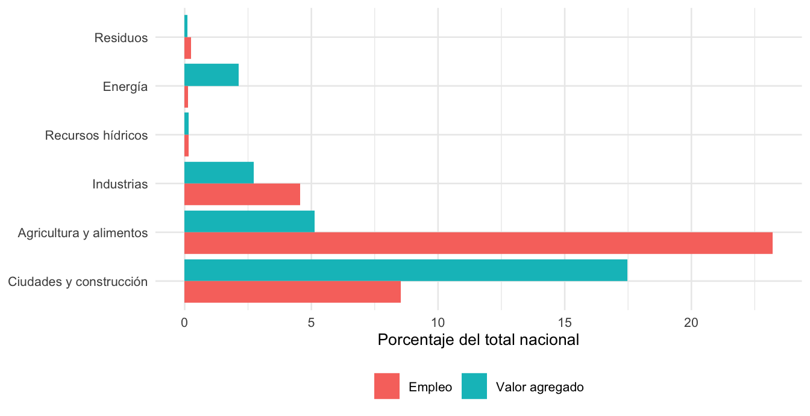
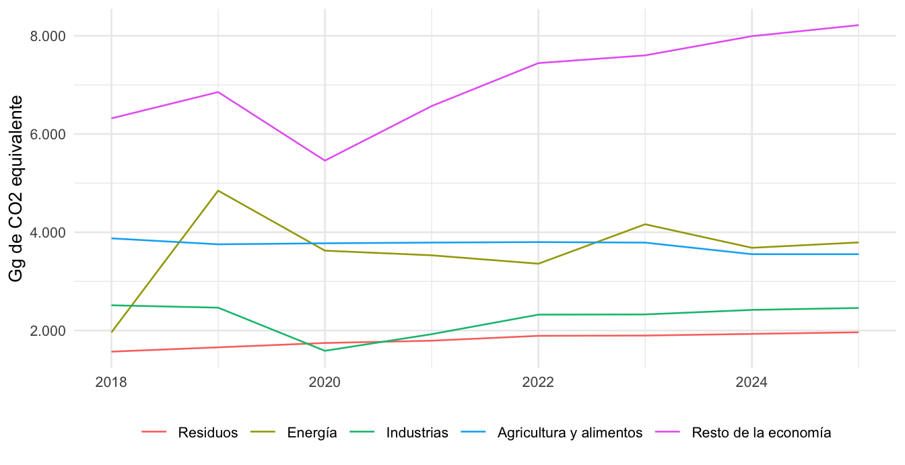
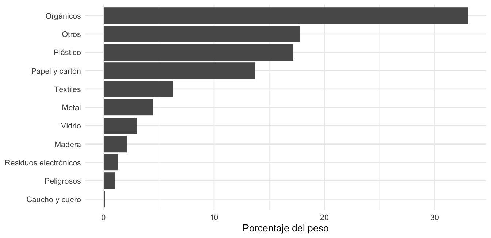
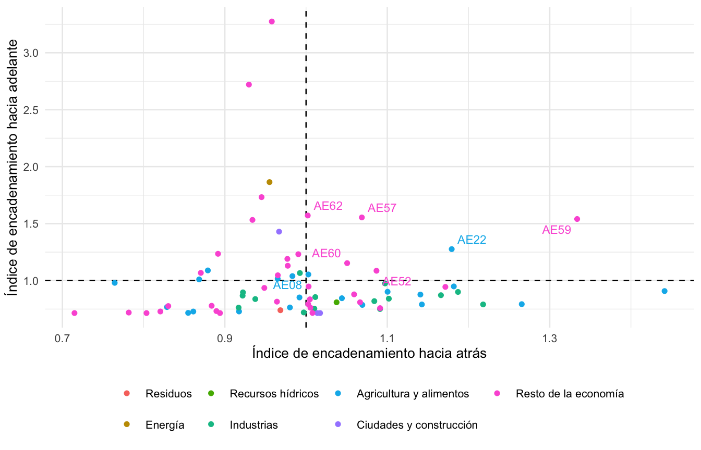

Sigla | Significado |
|---|---|
AAUD | Autoridad de Aseo Urbano y Domiciliario |
AMPYME | Autoridad de la Micro, Pequeña y Mediana Empresa |
CEPAL | Comisión Económica para América Latina y el Caribe |
CIIU | Clasificación Industrial Internacional Uniforme |
EDGAR | Base de datos de emisiones para la investigación atmosférica global (Emissions Database for Global Atmospheric Research) |
EML | Encuesta de Mercado Laboral |
GEI | Gases de efecto invernadero |
GIZ | Agencia Alemana de Cooperación Internacional |
IED | Inversión extranjera directa |
INEC | Instituto Nacional de Estadística y Censo |
IPCC | Grupo Intergubernamental de Expertos sobre el Cambio Climático |
MEF | Ministerio de Economía y Finanzas |
MiAMBIENTE | Ministerio de Ambiente de Panamá |
MIP | Matriz insumo-producto |
OIT | Organización Internacional del Trabajo |
PNUD | Programa de las Naciones Unidas para el Desarrollo |
REP | Responsabilidad extendida del productor |
SCN | Sistema de Cuentas Nacionales |
UTCUTS | Uso de la tierra, cambio de uso de la tierra y silvicultura |
Análisis de los sectores económicos priorizados para la economía circular en Panamá
Caracterización sectorial, eslabonamientos productivos e instrumentos de política
Resumen ejecutivo
Este documento caracteriza, con las estadísticas oficiales disponibles, los sectores de la economía de Panamá que la política de economía circular ha priorizado, y propone instrumentos económicos que pueden promover la circularidad en los mismos. Ofrece un punto de partida común y una propuesta inicial para el diseño de política pública, la regulación y el financiamiento de la transición circular del país.
La Hoja de Ruta de Economía Circular con enfoque de cambio climático desarrollada participativamente (Ministerio de Ambiente de Panamá y Programa de las Naciones Unidas para el Desarrollo, 2024) establece seis sectores de política que incluye (i) residuos, (ii) energía, (iii) recursos hídricos, (iv) industrias, (v) agricultura y alimentos, así como (vi) ciudades y construcción. Dado que la La Ley 502 de 2025 (Asamblea Nacional de Panamá, 2025) fija el marco legal de la transición, pero no establece sectores de política ni actividades económicas particulares, este estudio conecta esos seis grandes sectores de política con 80 actividades económicas de las cuentas nacionales para poder caracterizar, a través de estadísticas socioeconómicas, el estado de aquellas áreas de la economía en donde dicha ley operará. Para ello se evaluó el producto interno bruto, el empleo con desglose por género y condición laboral, el comercio exterior, la inversión, la estructura de mercado, las emisiones de gases de efecto invernadero, el uso de recursos, el potencial de recuperación de materiales y los eslabonamientos productivos.
- Peso económico. Los seis sectores de política generan 27,8 % del valor agregado y concentran 36,8 % de los puestos de trabajo de 2024. La construcción es el más grande por valor agregado (17,5 %), y agricultura y alimentos el más grande por empleo (23,2 %). Residuos, recursos hídricos y energía son sectores de política pequeños en las cuentas nacionales: ninguno supera 2,1 % del valor agregado. La energía crece 6,7 % anual entre 2018 y 2024 a precios corrientes.
- Empleo e informalidad. La informalidad estimada es alta en agricultura y alimentos (88,9 %), construcción (70,1 %) e industrias (64,3 %). La participación de las mujeres es baja en construcción (5,0 %) y en agricultura (26,3 %), y cercana a la mitad en industrias (46,2 %).
- Residuos. El sector formal de residuos aportó 87,9 millones de balboas de valor agregado en 2024, mientras que la generación de residuos sólidos municipales se estimó en 1,97 millones de toneladas al año, de los cuáles casi dos tercios son tanto orgánicos y plásticos, así como de papel y cartón.
- Inversión. La formación bruta de capital fijo fue de 27.159 millones de balboas en 2024 y 83 % corresponde a construcción. Las cuentas nacionales la publican por producto; la inversión por sector se estimó con dos métodos de asignación y debe leerse como una aproximación de orden de magnitud.
- Emisiones. Según la base datos de emisiones de gases efecto invernadero EDGAR, las emisiones, excluyendo uso de la tierra, fueron de 19,8 millones de toneladas de CO₂ equivalente en 2023. Energía y agricultura concentran el 40,2 % de ellas.
- Eslabonamientos. A través de un análisis de insumo-producto que utiliza la matriz oficial de 2018 (Instituto Nacional de Estadística y Censo (INEC), Contraloría General de la República, 2024b), se determinó que agricultura y alimentos tiene los encadenamientos más fuertes hacia atrás y hacia adelante entre los seis sectores de política. Es decir, que está vinculada a más actividades económicas directa e indirectamente a través de sus insumos. La electricidad, por su parte, es una actividad de impulso hacia adelante, es decir que sirve como insumo directo e indirecto de muchas actividades, mientras que el sector de residuos, aunque pequeño, genera 41,3 puestos de trabajo directa e indirectamente por cada millón de balboas de demanda final, lo que lo convierte en el segundo valor más alto después de agricultura y alimentos.
A través de este documento se propone un conjunto de catorce instrumentos, agrupados en seis familias y ordenados en dos pasos. La selección parte de lo que muestran los datos de cada sector de política, del mandato que la ley ya establece y de lo que otros países han hecho con instrumentos equivalentes. La sección de instrumentos describe cada uno con ejemplos y con su aplicación al caso de Panamá.
La primera familia reúne los instrumentos habilitantes, porque sin información y sin una base de actores reconocidos los demás no se sostienen. El registro de productores e importadores y trazabilidad permite saber qué se pone en el mercado y en qué cantidades, algo indispensable en un país donde industrias y agricultura y alimentos importan más de lo que exportan y donde cualquier tarifa o meta de responsabilidad extendida del productor recaería sobre importadores. La formalización e inclusión de los recicladores de base reconoce como prestadores de un servicio a quienes hoy recuperan materiales en una cadena atomizada y sin registro actualizado, y es la condición para que los pagos por recuperación lleguen a quienes la realizan.
La segunda familia, de instrumentos normativos y regulatorios, fija obligaciones a quienes ponen productos en el mercado. La responsabilidad extendida del productor con metas por flujo traslada el costo del final de vida de los productos del presupuesto municipal a su precio, y se propone empezar con envases, aparatos electrónicos y otros flujos de impacto ambiental alto. La ecomodulación de las contribuciones hace que la tarifa suba o baje según la reciclabilidad y el diseño del producto, de modo que la responsabilidad extendida incentive el rediseño y no opere como un cargo uniforme. El contenido mínimo de material reciclado y las normas para el material secundario crean demanda para lo que recuperan los sistemas de responsabilidad extendida y los recicladores, con la botella plástica y los áridos de la construcción como puntos de entrada.
La tercera familia, tributaria y tarifaria, usa los precios para cambiar conductas y financiar el servicio. El sistema de depósito y retorno de envases de bebidas devuelve a la cadena los envases que hoy se pierden, aunque exige control en las fronteras para evitar el fraude. La tarifa de aseo a costo real, con pago por generación y tasa de disposición final, busca que la recolección sea financieramente sostenible, que quien separa sus residuos pague menos y que verter resulte más caro que reciclar, con protección para los hogares vulnerables. Los incentivos fiscales a la inversión circular reducen el costo de capital de la maquinaria de recolección selectiva, reciclaje, compostaje y tratamiento de agua, y se apoyan en un precedente panameño en energía solar y en el mandato de la Ley 33 de 2018.
La cuarta familia, de instrumentos financieros, moviliza recursos hacia proyectos y empresas. Los criterios de economía circular en la taxonomía de finanzas sostenibles darían un lenguaje común a bancos e inversionistas, pues hoy la contribución sustancial a la economía circular solo está definida para el uso del suelo. Los bonos temáticos y el marco soberano de financiamiento aprovechan que el Marco de Financiamiento Sostenible ya incluye categorías de economía circular y de agua, y apuntan a una cartera de proyectos de residuos y de reducción de pérdidas de agua, que rondan el 40 % de lo producido. El crédito verde, las garantías y el financiamiento combinado buscan llegar a las pequeñas empresas, que son cerca del 96 % de las empresas del país, y a los recicladores formalizados, a quienes la banca suele considerar de riesgo alto.
La quinta familia reúne dos instrumentos de promoción y facilitación de inversiones. Las compras públicas circulares usan el poder de compra del Estado, que el artículo 12 de la Ley 502 ya orienta hacia criterios de economía circular, para demandar áridos y bloques reciclados en la obra pública y exigir formalidad en los pliegos del mayor sector de política por valor agregado. Las alianzas público-privadas, el apoyo a la innovación y los mecanismos de promoción existentes apuntan a la infraestructura municipal de separación, compostaje y valorización, que recibe poca inversión, y a conectar los incentivos con los programas del Ministerio de Comercio e Industrias.
La sexta familia, de capacidades y conciencia ambiental, tiene un solo instrumento, información, formación y certificación, que sostiene a los demás mediante la capacitación de analistas de crédito y compradores públicos, la certificación de los recicladores y la publicación de indicadores que cierren las brechas de datos documentadas en este análisis.
Los catorce instrumentos se ordenan en dos pasos. En el primer paso se sitúan nueve de ellos, que incluyen los habilitantes, los incentivos fiscales, la taxonomía, los bonos temáticos, el crédito verde, las compras públicas, las alianzas y la información y formación, porque no dependen de un registro operativo. En el segundo paso se agrupan los cinco que sí dependen de él, que son la responsabilidad extendida del productor, la ecomodulación, el depósito y retorno, el contenido reciclado y la tarifa de aseo con tasa de disposición final. La razón del orden es que la experiencia internacional muestra que los gravámenes, las tarifas y las metas pierden eficacia sin registros y sin fiscalización. Los instrumentos del segundo paso pueden prepararse en paralelo, pero entran en vigor cuando el registro esté funcionando.
Lista de cuadros y figuras
Cuadros
- Cuadro 2: Sectores de política y actividades del Sistema de Cuentas Nacionales
- Cuadro 3: Valor agregado y empleo por sector de política, 2024
- Cuadro 4: Empleo por género, informalidad y remuneración, 2024
- Cuadro 5: Comercio exterior por sector de política, 2024
- Cuadro 6: Formación bruta de capital fijo por sector de política, 2024
- Cuadro 7: Inversión extranjera directa por sector de política
- Cuadro 8: Estructura de tamaño de las empresas, 2022
- Cuadro 9: Empresas de las clases de actividad más relacionadas con los sectores de política, 2022
- Cuadro 10: Emisiones de gases de efecto invernadero por sector de política, 2023
- Cuadro 11: Uso de energía y de agua por sector de política
- Cuadro 12: Composición de los residuos sólidos municipales, 2021
- Cuadro 13: Exportaciones de desechos y generación estimada, 2021
- Cuadro 14: Eslabonamientos por sector de política, 2018
- Cuadro 15: Eslabonamientos de actividades seleccionadas, 2018
- Cuadro 16: Matriz de relevancia sectorial
- Cuadro 17: Instrumentos propuestos, sectores de política y respaldo en los datos
- Cuadro 18: Paquete de instrumentos propuesto por sector de política
- Cuadro 19: Brechas de información y tratamiento
- Cuadro 1: Glosario de siglas
- Cuadro 20: Mapeo detallado de las 80 actividades del SCN a los sectores de política (anexo)
- Cuadro 21: Eslabonamientos de las 76 actividades de la matriz insumo-producto, 2018 (anexo II)
Figuras
Glosario de siglas
El Cuadro 1 lista las siglas usadas en el documento.
1 Introducción
Panamá aprobó en noviembre de 2025 la Ley 502, que dicta normas para la implementación de la economía circular como estrategia ambiental (Asamblea Nacional de Panamá, 2025). La ley crea el Consejo Nacional de Economía Circular y ordena un Plan Estratégico Nacional (en adelante el Consejo) con lineamientos para guías técnicas por actividad económica y para la responsabilidad extendida del productor (REP). Crea además una plataforma de indicadores en el Sistema Nacional de Información Ambiental. La reglamentación corresponde al Ministerio de Ambiente (MiAMBIENTE).
El Ministerio de Ambiente solicitó el apoyo técnico de la CEPAL para implementar la estrategia nacional de economía circular, y este documento forma parte de esa cooperación, financiada por el programa CEPAL-BMZ/GIZ “Promoviendo la Economía Circular”.
Su propósito es caracterizar con datos los sectores de política donde coinciden la necesidad y la oportunidad de circularidad, y proponer a partir de ellos los instrumentos de política que merecen una evaluación más detallada por parte de representantes de las instituciones públicas, del sistema financiero, del sector privado, de la academia y de la sociedad civil. Para este fin se ha utilizado estadísticas oficiales.1
Para efectos de este documento, se entiende por sectores de política aquellos determinados por la Hoja de Ruta de Economía Circular con enfoque de cambio climático (Ministerio de Ambiente de Panamá y Programa de las Naciones Unidas para el Desarrollo, 2024) y que incluye (i) residuos, (ii) energía, (iii) recursos hídricos, (iv) industrias, (v) agricultura y alimentos, así como (vi) ciudades y construcción. De manera complementaria, se analiza 80 actividades económicas individuales del sistema de cuentas nacionales que se han ordenado bajo dichos sectores de política y cuyo detalle se encuentra en el Anexo I.
2 Objetivos y alcance
2.1 Objetivo general
Caracterizar las actividades económicas contenidas en los sectores de política priorizados por la economía circular de Panamá, considerando los eslabonamientos productivos como base para identificar instrumentos, principalmente económicos, que promuevan la circularidad.
2.2 Objetivos específicos
- Establecer una equivalencia entre los sectores de política y las actividades económicas de las estadísticas oficiales.
- Evaluar cada sector de política según los criterios siguientes: producto interno bruto; empleo con desglose por género y condición formal o informal; exportaciones, importaciones y competitividad; inversión, principalmente privada; concentración de mercado y barreras de entrada y salida; emisiones de gases de efecto invernadero; uso de recursos; así como potencial de recuperación de materiales secundarios.
- Cuantificar los eslabonamientos productivos entre las actividades económicas y, por ende, entre los sectores de política.
- Identificar las brechas de información que condicionan la evaluación y proponer cómo cerrarlas.
- Proponer, con base en los datos y en la experiencia internacional, los instrumentos de política pública que pueden promover la circularidad en cada sector de política, y describirlos con ejemplos.
2.3 Alcance
El análisis cubre el período 2018 a 2024 para las cuentas nacionales (Instituto Nacional de Estadística y Censo (INEC), Contraloría General de la República, 2026b) y el empleo (Instituto Nacional de Estadística y Censo (INEC), Contraloría General de la República, 2026a), y los años más recientes disponibles para el resto de los criterios. La matriz insumo-producto oficial es de 2018 (Instituto Nacional de Estadística y Censo (INEC), Contraloría General de la República, 2024b). Los valores monetarios están en balboas corrientes.
3 Antecedentes
3.1 Marco legal y de política
La Ley 502 establece como finalidades, entre otras, reducir la generación de desechos, fomentar la valorización de residuos, establecer la REP como mecanismo para mitigar los impactos ambientales de los productos durante todo su ciclo de vida, fomentar empleos verdes e incentivar el emprendimiento sostenible mediante el acceso al financiamiento (Asamblea Nacional de Panamá, 2025, art. 2). Incorpora además criterios de sostenibilidad y economía circular a las compras públicas (Asamblea Nacional de Panamá, 2025, art. 12). Los incentivos fiscales, las tarifas de la REP y los indicadores específicos quedan a cargo de la reglamentación y del Consejo.
La Hoja de Ruta de Economía Circular con enfoque de cambio climático, elaborada por MiAMBIENTE con el Programa de las Naciones Unidas para el Desarrollo (PNUD), priorizó seis sectores de política por su potencial de reducir emisiones o de adaptarse al cambio climático. Definió además siete líneas de acción transversal, entre ellas el marco regulatorio, la producción circular con incentivos y la innovación (Ministerio de Ambiente de Panamá y Programa de las Naciones Unidas para el Desarrollo, 2024, p. 7 y 29-32). Su meta es cualitativa y está fijada al año 2050. Las metas cuantitativas vigentes figuran en el Plan Nacional de Gestión Integral de Residuos 2017-2027, que propone destinar al menos la mitad de los residuos a la reutilización y el reciclaje y tratar el 75 % de los recogidos (Autoridad de Aseo Urbano y Domiciliario, 2017, pp. 7-8).
Otros instrumentos son la Ley 33 de 2018, que establece la política Basura Cero (Asamblea Nacional de Panamá, 2018), y la Ley 187 de 2020, que regula el reemplazo progresivo de los plásticos de un solo uso (Asamblea Nacional de Panamá, 2020). En el ámbito financiero, la Taxonomía de Finanzas Sostenibles de Panamá incluye la transición hacia una economía circular entre sus objetivos (Superintendencia de Bancos de Panamá et al., 2024), y el Marco de Financiamiento Sostenible de la República contempla una categoría de economía circular para bonos temáticos (Ministerio de Economía y Finanzas de Panamá, 2024).
3.2 Experiencia regional
La CEPAL analizó nueve hojas de ruta de economía circular de América Latina y el Caribe, con 261 iniciativas (Samaniego et al., 2022). Los instrumentos económicos representan una cuarta parte de las iniciativas del eje de políticas y las estrategias de financiamiento solo el 7 %. La Comisión concluye que hay un amplio espacio para buscar fuentes y diseñar estrategias de financiamiento de la transición (Samaniego et al., 2022, pp. 26-27). Asimismo, se determinó que el sector de residuos concentra el 31 % de las iniciativas regionales (Samaniego et al., 2022, p. 30).
4 Fuentes y método
Se desarrolló un procesamiento de fuentes oficiales y algunas de carácter internacional, con lo que se construyó varios conjuntos de datos sobre los cuales descansa este análisis y para los cuales se dejaron memorias de cálculo.
- Cuentas económicas por actividad y sector de política. Producción, valor agregado, exportaciones e importaciones de 2018 a 2024, a partir de los cuadros de oferta y utilización del Instituto Nacional de Estadística y Censo (INEC) (Instituto Nacional de Estadística y Censo (INEC), Contraloría General de la República, 2026b).
- Empleo. Puestos de trabajo y remuneración por actividad de la matriz de empleo de las cuentas nacionales (Instituto Nacional de Estadística y Censo (INEC), Contraloría General de la República, 2026a), complementados con la composición por sexo y la informalidad por grupo de actividades de la Encuesta de Mercado Laboral (Instituto Nacional de Estadística y Censo (INEC), 2026; Organización Internacional del Trabajo (OIT), ILOSTAT, 2025).
- Eslabonamientos. La matriz insumo-producto de 2018, de 76 actividades, que reúne algunas de las 80 de las cuentas nacionales (Instituto Nacional de Estadística y Censo (INEC), Contraloría General de la República, 2024b), procesada con el método estándar de análisis insumo-producto (Miller y Blair, 2022).
- Recursos y ambiente. Emisiones de la base de datos Emissions Database for Global Atmospheric Research (EDGAR, por sus siglas en inglés) (European Commission, Joint Research Centre (JRC), 2026), balances de energía (Secretaría Nacional de Energía de Panamá, 2026), extracciones de agua (Banco Mundial, 2026), residuos (Banco Mundial, 2024) y comercio de desechos (United Nations Statistics Division, 2026).
- Inversión y estructura empresarial. Inversión extranjera directa y directorio de empresas del INEC (Instituto Nacional de Estadística y Censo (INEC), Contraloría General de la República, 2024a, 2025).
Términos. Una actividad económica es cada clase individual del Sistema de Cuentas Nacionales (SCN) y de la matriz insumo-producto. Un grupo de actividades económicas es cada una de las grandes secciones de la Clasificación Industrial Internacional Uniforme de todas las Actividades Económicas (CIIU), que se identifican con letras (por ejemplo, D es electricidad, gas y vapor, y E es agua y desechos). Un sector de política es cada uno de los seis sectores de la Hoja de Ruta, y reúne actividades económicas de uno o más grupos. Las actividades núcleo son aquellas cuyo producto principal es la gestión de residuos, el agua, la energía o la construcción, es decir, las que definen a cada sector de política; las actividades intensivas son las que generan residuos, usan materiales, agua o energía en volumen, o abastecen de insumos a un sector núcleo.
Asignación de actividades a sectores de política.2 Cada actividad tiene un único sector de política principal, de modo que los totales suman sin doble conteo. Los sectores de política secundarios y el tipo de vínculo se registran para el análisis de relaciones, pero no se suman, mientras que las actividades sin vínculo identificado en las fuentes de política se han consignado en el “Resto de la economía” para tener la perspectiva completa. El Cuadro 2 resume el resultado y la tabla completa con las 80 actividades y su evidencia figura en el Anexo I.
Sector de política | Actividades | Actividades principales |
|---|---|---|
Agricultura y alimentos | 22 | Cultivo de cereales, legumbres y semillas oleaginosas; Cultivo de maiz; Cultivo de arroz |
Industrias | 15 | Elaboración de bebidas y tabaco; Fabricación de productos textiles y prendas de vestir; Fabricación de cuero, productos conexos y calzado |
Energía | 1 | Suministro de electricidad, gas, vapor y aire acondicionado |
Recursos hídricos | 1 | Captación, tratamiento y distribuciòn de agua |
Residuos | 1 | Recogida, tratamiento y eliminación de desechos, recuperación de materiales y actividades de descontaminación y otros servicios de eliminación de desechos |
Ciudades y construcción | 3 | Construcción de edificios; Construcción de obras de ingeniería civil; Actividades especializadas de la construcción |
Fuente: elaboración propia con base en la Hoja de Ruta (Ministerio de Ambiente de Panamá y Programa de las Naciones Unidas para el Desarrollo, 2024) y en las cuentas nacionales (Instituto Nacional de Estadística y Censo (INEC), Contraloría General de la República, 2026b).
Calidad de los indicadores. Cada indicador tiene un identificador de calidad: alta si es un dato oficial desagregable al sector de política; media si requiere un supuesto de asignación; baja si solo existe para un conjunto de sectores de política o un grupo de actividades más amplio. La sección de limitaciones detalla los casos.
5 Estructura económica y empleo
5.1 Producto y valor agregado
El valor agregado bruto de una actividad es el resultado de restar a la producción el consumo intermedio. Para ejemplificar, el equivalente en la contabilidad empresarial sería la ganancia que queda después de quitar a las ventas los costos (exceptuando en este caso el costo de sueldos y salarios). La suma de esas ganancias o valores agregados a nivel de actividades económicas (más impuestos, menos subveniciones) es el Producto Interno Bruto. Este es repartido en la economía como pago a los factores entre salarios, utilidades e impuestos. Desde esa perspectiva, los seis sectores de política suman 27,8 % del valor agregado bruto de 2024, que fue de 84.356,8 millones de balboas. Ciudades y construcción es el mayor, con 14.749,8 millones de balboas, y le siguen agricultura y alimentos (4.334,2), industrias (2.306,3) y energía (1.803,3). Residuos y recursos hídricos son pequeños.
La tasa anual compuesta es el ritmo constante de crecimiento que llevaría el valor de 2018 al de 2024. Entre 2018 y 2024 el valor agregado a precios corrientes de energía y de agricultura y alimentos creció por encima del 6 % anual, y el de industrias cayó 1,4 % anual. Las tasas mezclan variaciones de precios y de cantidades. El valor agregado total pasó de 67.600 millones de balboas en 2019 a 55.637 en 2020, el año de la pandemia, y la cifra de 2024 es provisional.
El contraste entre el peso económico y el peso en el empleo es el rasgo más visible (Cuadro 3 y Figura 1). La participación de agricultura y alimentos en el empleo (23,2 %) es más de cuatro veces su participación en el valor agregado (5,1 %), lo que indica una baja productividad media por puesto. En construcción ocurre lo contrario, pues su participación en el valor agregado es el doble de su participación en el empleo. Estos desbalances importan para los instrumentos, porque una política que eleve costos en un sector de política intensivo en empleo y de baja productividad tendrá efectos distributivos distintos de una que se aplique en un sector de política intensivo en capital.
Sector de política | Valor agregado (millones B/.) | Participación (%) | Crecimiento anual 2018-2024 (%) | Puestos | Participación en el empleo (%) |
|---|---|---|---|---|---|
Residuos | 88 | 0,1 | 3,6 | 4.935 | 0,2 |
Energía | 1.803 | 2,1 | 6,7 | 2.653 | 0,1 |
Recursos hídricos | 141 | 0,2 | 0,9 | 3.350 | 0,2 |
Industrias | 2.306 | 2,7 | -1,4 | 91.171 | 4,6 |
Agricultura y alimentos | 4.334 | 5,1 | 6,3 | 463.945 | 23,2 |
Ciudades y construcción | 14.750 | 17,5 | 2,2 | 170.367 | 8,5 |
Fuente: elaboración propia con datos del INEC (Instituto Nacional de Estadística y Censo (INEC), Contraloría General de la República, 2026b, 2026a). Valores a precios corrientes; 2024 es provisional.

5.2 Empleo, género y condición laboral
El empleo se mide en puestos de trabajo de la matriz de empleo de las cuentas nacionales, que cubre 2018 a 2024. Esa fuente no distingue sexo ni formalidad. Para estimar ambos se aplicó a cada actividad el perfil de su grupo de actividades de la Encuesta de Mercado Laboral. La estimación supone que todas las actividades de un grupo tienen la misma proporción de mujeres y la misma tasa de informalidad que el grupo completo. Es una imputación proporcional, útil para comparar sectores de política pero no para describir una actividad individual.
Las estimaciones mostradas en el Cuadro 4 explican que los sectores de política con más empleo (agricultura y alimentos, construcción, industrias) son también los de mayor informalidad estimada, por encima del 60 %. Además, la participación de las mujeres es baja en construcción y en agricultura, y de alrededor del 46 % en industrias, lo que importa para los instrumentos que involucren capacitación, formalización o acceso a financiamiento. Finalmente, la remuneración media por asalariado es la más alta en energía y la más baja en agricultura y alimentos.
En cuanto a los sectores de política pequeños, los puestos de las cuentas nacionales en electricidad (grupo D) y en agua y desechos (grupo E) equivalen a 0,3 y 0,5 veces los ocupados de la encuesta, de modo que el empleo de estos sectores de política puede ser de dos a tres veces mayor que el que muestra el Cuadro 4. Además, la encuesta no tiene una categoría para los recicladores de base, y las fuentes consultadas no los cuantifican con datos recientes. El registro de 2010 identifica 6.085 segregadores urbanos (Banco Interamericano de Desarrollo, Organización Panamericana de la Salud y Asociación Interamericana de Ingeniería Sanitaria y Ambiental, 2010, p. 143), y la Ley 33 de 2018 y la Ley 502 reconocen su inclusión (Asamblea Nacional de Panamá, 2018; Asamblea Nacional de Panamá, 2025, art. 10).
Sector de política | Puestos | Mujeres (%) | Informales (%) | Remuneración media por asalariado (miles B/.) |
|---|---|---|---|---|
Residuos | 4.935 | 27,1 | 21,9 | 16,8 |
Energía | 2.653 | 32,1 | 25,5 | 50,2 |
Recursos hídricos | 3.350 | 27,1 | 21,9 | 24,7 |
Industrias | 91.171 | 46,2 | 64,3 | 13,5 |
Agricultura y alimentos | 463.945 | 26,3 | 88,9 | 7,4 |
Ciudades y construcción | 170.367 | 5,0 | 70,1 | 26,7 |
Fuente: elaboración propia con datos del INEC (Instituto Nacional de Estadística y Censo (INEC), 2026; Instituto Nacional de Estadística y Censo (INEC), Contraloría General de la República, 2026a) y de la OIT (Organización Internacional del Trabajo (OIT), ILOSTAT, 2025). Perfil por grupo de actividades de 2025 aplicado a los puestos de 2024.
5.3 Comercio exterior y competitividad
Las cuentas nacionales registran el comercio por producto. Para llevarlo a las actividades se asignó cada producto a la actividad que lo produce en el país, y los productos con menos de la mitad de oferta nacional (reexportaciones, como los combustibles de bunker) se agruparon aparte. Por eso los resultados por sector de política muestran indicios de orientación exportadora y ofrecen una aproximación gruesa de la competitividad.
Como muestra el Cuadro 5, industrias y agricultura y alimentos tienen saldos comerciales negativos (-555 y -487 millones de balboas, respectivamente) y exportan 8 % y 7 % de su producción. Las exportaciones totales del país se concentran en servicios y reexportaciones, que están en “Resto de la economía”. Para la economía circular esto sugiere que los instrumentos sobre bienes dependen más de la importación que de la producción nacional, un rasgo importante para el diseño de la REP, pues los obligados serán en buena parte importadores.
Sector de política | Exportaciones | Importaciones | Saldo comercial | Exportaciones sobre producción (%) |
|---|---|---|---|---|
Residuos | 0 | 0 | 0 | 0,0 |
Energía | 6 | 1 | 5 | 0,2 |
Recursos hídricos | 0 | 0 | 0 | 0,0 |
Industrias | 387 | 943 | -555 | 8,2 |
Agricultura y alimentos | 649 | 1.136 | -487 | 7,1 |
Ciudades y construcción | 0 | 0 | 0 | 0,0 |
Fuente: elaboración propia con datos del INEC (Instituto Nacional de Estadística y Censo (INEC), Contraloría General de la República, 2026b). Los productos de residuos, agua y construcción no tienen comercio registrado en las cuentas nacionales, y el valor cero indica esa ausencia.
Como referencia del comercio de materiales recuperables, en 2024 Panamá exportó unas 269 mil toneladas de desperdicios de metales, 31 mil toneladas de papel y cartón para reciclar y 4,6 mil toneladas de desechos de plástico (United Nations Statistics Division, 2026). Esas cifras muestran la recuperación que sale por el comercio exterior, mientras que el reciclaje interno queda fuera de esa medición.
5.4 Inversión y estructura de mercado
Las cuentas nacionales publican la formación bruta de capital fijo (FBKF) por producto, es decir, por tipo de bien de capital, y no por la actividad que invierte. Con los cuadros de oferta y utilización se determinó qué sectores producen los bienes en que se invierte y, seguidamente, se estimó qué actividades invierten, repartiendo la FBKF de cada producto con reglas explícitas y con dos métodos para mostrar la sensibilidad de la asignación.3
La FBKF fue de 27.159 millones de balboas en 2024, equivalente a 32,2 % del valor agregado. La construcción concentra la mayor parte, pues las edificaciones residenciales son el 40,5 % de la FBKF, las obras de ingeniería civil el 28,2 %, las edificaciones no residenciales el 14,4 % y la maquinaria, el equipo y otros bienes el 16,1 %. Como muestra el Cuadro 6, el sector de ciudades y construcción produce el 83,2 % de los bienes de capital, y el 13,7 % corresponde a bienes que el país importa, principalmente maquinaria y equipos de transporte. En el promedio de 2022 a 2024, la tasa de inversión de toda la economía fue de 31,8 % del valor agregado, y los seis sectores de política aportan 5,2 puntos porcentuales de esa tasa, es decir, 16,4 % de la inversión estimada. El resto corresponde a las demás actividades.
Sector de política | Bienes de capital que produce | FBKF estimada que realiza | Tasa de inversión (%) |
|---|---|---|---|
Residuos | 0 | 4 | 4,7 |
Energía | 0 | 511 | 27,8 |
Recursos hídricos | 0 | 47 | 26,9 |
Industrias | 261 | 772 | 33,4 |
Agricultura y alimentos | 212 | 1.000 | 24,9 |
Ciudades y construcción | 22.584 | 2.210 | 14,2 |
Resto de la economía | 384 | 22.615 | 36,5 |
Bienes importados | 3.719 | n. a. | n. a. |
Total | 27.159 | 27.159 | 31,8 |
Fuente: elaboración propia con datos del INEC (Instituto Nacional de Estadística y Censo (INEC), Contraloría General de la República, 2026b, 2026a). Nota: La columna de bienes que produce es un dato directo. Un cero indica que el sector no fabrica bienes de capital; “n. a.” indica que no aplica, porque los bienes importados no corresponden a un sector que invierta. El total de las dos primeras columnas es la FBKF nacional. La FBKF estimada que realiza usa un método de asignación por tipo de bien. La tasa de inversión es el promedio 2022-2024 de la FBKF central sobre el valor agregado del sector. La FBKF estimada de “Resto de la economía” incluye las viviendas.
Las edificaciones residenciales se asignan a la actividad de alquiler de viviendas, que incluye el alquiler imputado de las viviendas ocupadas por sus dueños, y por eso la inversión estimada del resto de la economía es tan alta. Con el valor central, agricultura y alimentos (1.000 millones de balboas), industrias (772) y energía (511) tienen una inversión del mismo orden de magnitud, y residuos es el sector con la menor inversión estimada (4 millones de balboas). El método de asignación importa: en construcción la estimación va de 2.210 a 5.351 millones de balboas, y en energía de 511 a 823. Las cifras por sector deben leerse como órdenes de magnitud. El desglose por tipo de bien no distingue la inversión pública de la privada.
Dos lecturas de la inversión en edificaciones. La FBKF registra la adquisición de un activo, de modo que estrictamente la inversión corresponde a quien lo posee. Una constructora que edifica viviendas para venderlas produce el bien, y la inversión es del comprador. Según la convención de las cuentas nacionales, quien posee la vivienda, sea para alquilarla o porque la habita su dueño (alquiler imputado), figura en las actividades inmobiliarias. Las viviendas que los hogares construyen para sí mismos aparecen como producción de construcción de edificios para uso final propio, y su propietario sigue siendo el hogar. Por eso las edificaciones residenciales se asignan a la actividad de alquiler de viviendas, que está fuera de los seis sectores de política.
Para los fines de este documento conviene mirar también la lectura de producción. Los flujos de materiales y de residuos de obra pasan por la actividad que construye, sin importar quién sea el dueño final, y la construcción es el sector de política cuyo papel en la circularidad se vincula con esos flujos. Desde esa lectura, los seis sectores de política producen el 84 % de los bienes de capital (columna «Bienes de capital que produce» del Cuadro 6). Si solo las viviendas se atribuyeran a quien las construye y el resto de la asignación no cambiara, el aporte de los seis a la tasa de inversión pasaría de 5,2 a 17,8 puntos porcentuales, y su participación en la FBKF, de 16 % a 56 %. Estrictamente, la inversión de los seis sectores es la primera cifra, mientras que el segundo escenario dimensiona el peso de los sectores de política en la actividad que genera los bienes de capital.
Como complemento, la inversión extranjera directa (IED) por grupo de actividades del INEC combina electricidad, gas y agua en una sola línea.
Según el Cuadro 7, la IED acumulada de 2022 a 2024 en el grupo de energía, agua y residuos fue de 592 millones de balboas, la mayor entre los seis sectores de política. En industrias fue de 268, en construcción de 184 y en agricultura de 22. La inversión privada nacional no está cubierta por esta cifra.
Sector de política | Flujo acumulado 2022-2024 | Posición al cierre de 2024 |
|---|---|---|
Energía, recursos hídricos y residuos (conjunto) | 592 | 1.948 |
Industrias | 268 | 2.171 |
Agricultura y alimentos | 22 | 67 |
Ciudades y construcción | 184 | 1.966 |
Fuente: elaboración propia con datos del INEC (Instituto Nacional de Estadística y Censo (INEC), Contraloría General de la República, 2025). La fuente publica una sola línea para electricidad, gas y agua, que reúne tres sectores de política; por eso se muestra como un grupo y no puede separarse. Cifras preliminares.
Respecto de la estructura de mercado, el Directorio de Empresas de 2022 del INEC permite comparar el tamaño de las empresas en el grupo de actividades donde cada sector de política tiene su núcleo (Instituto Nacional de Estadística y Censo (INEC), Contraloría General de la República, 2024a). Las empresas grandes, con ingresos superiores a 2,5 millones de balboas, son 39 % en electricidad, gas y vapor, frente a menos de 9 % en industrias, agricultura y construcción (Cuadro 8).
Sector de política | Empresas | Micro | Pequeña | Mediana | Grande | Grandes (%) |
|---|---|---|---|---|---|---|
Agricultura y alimentos | 942 | 359 | 472 | 57 | 54 | 5,7 |
Industrias | 5.123 | 3.427 | 1.160 | 255 | 281 | 5,5 |
Energía | 184 | 45 | 40 | 28 | 71 | 38,6 |
Recursos hídricos y residuos | 188 | 82 | 64 | 19 | 23 | 12,2 |
Ciudades y construcción | 2.567 | 1.014 | 1.048 | 297 | 208 | 8,1 |
Fuente: elaboración propia con datos del Directorio de Empresas y Locales 2022 (Instituto Nacional de Estadística y Censo (INEC), Contraloría General de la República, 2024a). Tamaño según ingresos anuales con los umbrales de la Ley 8 de 2000 (Autoridad de la Micro, Pequeña y Mediana Empresa (AMPYME), 2017). Cada grupo reúne actividades de varios sectores de política.
Las clases de actividad económica más relacionadas con cada sector de política (Cuadro 9) muestran mercados con pocos oferentes en varias de ellas. Por ejemplo, 13 empresas fabrican cemento, cal y yeso, 49 fabrican productos de plástico y 120 operan en generación, transmisión y distribución eléctrica. En residuos, la recolección de desechos no peligrosos tiene 31 empresas con un promedio de 48 empleados, y el procesamiento y la recuperación de materiales tiene 77 empresas con menos de cuatro empleados en promedio. Los conteos sugieren concentración en algunas clases y atomización en la recuperación de materiales, pero no son participaciones de mercado.
Sector de política | Clase | Empresas | Personal | Personal por empresa |
|---|---|---|---|---|
Residuos | Recolección de desechos no peligrosos (basura) | 31 | 1.482 | 47,8 |
Residuos | Recolección de desechos peligrosos | 7 | 308 | 44,0 |
Residuos | Tratamiento y eliminación de desechos no peligrosos | 8 | 120 | 15,0 |
Residuos | Tratamiento y eliminación de desechos peligrosos | 4 | 82 | 20,5 |
Residuos | Procesamiento y recuperación de materiales | 77 | 292 | 3,8 |
Recursos hídricos | Captación, tratamiento y suministro de agua | 29 | 264 | 9,1 |
Energía | Generación, transmisión y distribución de energía eléctrica | 120 | 2.590 | 21,6 |
Industrias | Fabricación de productos de plástico | 49 | 1.007 | 20,6 |
Industrias | Fabricación de cemento, cal y yeso | 13 | 1.530 | 117,7 |
Industrias | Fabricación de artículos de hormigón, cemento, yeso y panalit y de otros productos minerales no metálicos , n.c.p | 160 | 1.495 | 9,3 |
Fuente: elaboración propia con datos del Directorio de Empresas y Locales 2022 (Instituto Nacional de Estadística y Censo (INEC), Contraloría General de la República, 2024a).
6 Presión ambiental y recursos
6.1 Emisiones de gases de efecto invernadero
La base de datos EDGAR (European Commission, Joint Research Centre (JRC), 2026) estima las emisiones de Panamá por categoría del IPCC desde 1970. No incluye el uso de la tierra y la silvicultura, que el inventario nacional reporta como sumidero neto (Ministerio de Ambiente de Panamá, 2024, p. 62). Para el año común de 2021, las emisiones de EDGAR equivalen a entre 79 % y 91 % de las del inventario nacional en energía, procesos industriales y agricultura, y a 137 % en residuos, de modo que las dos fuentes no coinciden. El análisis usa EDGAR porque ofrece una serie continua y comparable por categoría; el inventario nacional será la referencia para la medición oficial.
La intensidad de emisiones es el cociente entre las emisiones de un sector de política y su valor agregado, y mide cuántas emisiones acompaña cada millón de balboas que genera. El sector de residuos tiene la intensidad de emisiones más alta (22,5 Gg por millón de balboas de valor agregado, contra 2,5 en energía y cerca de 1 en industrias y agricultura; Cuadro 10). La cifra refleja que el valor agregado del sector formal de residuos es pequeño frente a las emisiones de la disposición de residuos, que se generan en todo el territorio. Mejorar la gestión de los residuos orgánicos y la captura de metano tiene un potencial de mitigación proporcionalmente grande. La Figura 2 muestra cómo evolucionaron las emisiones de cada sector de política desde 2018.
Sector de política | Emisiones (Gg CO2e) | Participación (%) | Intensidad (Gg CO2e por millón de B/.) |
|---|---|---|---|
Residuos | 1.898 | 9,6 | 22,5 |
Energía | 4.163 | 21,0 | 2,5 |
Industrias | 2.328 | 11,8 | 1,0 |
Agricultura y alimentos | 3.790 | 19,2 | 1,0 |
Resto de la economía | 7.601 | 38,4 |
Fuente: elaboración propia con datos de EDGAR (European Commission, Joint Research Centre (JRC), 2026). Recursos hídricos y construcción no tienen una categoría propia del IPCC; sus emisiones están en residuos (aguas residuales) e industrias (cemento y combustión). La intensidad se calcula solo donde el sector de emisiones y el sector económico coinciden.

6.2 Energía, agua y materiales
El Balance Energético Nacional registra el consumo final por sector de consumo (Secretaría Nacional de Energía de Panamá, 2026). La intensidad energética es el mismo cociente aplicado al consumo de energía. Entre los sectores de política con dato, industrias es el de mayor intensidad energética, con 2,05 miles de barriles equivalentes de petróleo por millón de balboas de valor agregado. La asignación del balance a los sectores de política es parcial: construcción y recursos hídricos no aparecen con consumo propio. Para el agua solo se dispone de la extracción nacional por tipo de uso, de la cual el 62,7 % corresponde al uso doméstico y el 36,8 % a la agricultura (Banco Mundial, 2026). Los dos indicadores se presentan juntos en el Cuadro 11, con las celdas vacías donde la fuente no asigna consumo.
Sector de política | Energía (10³ bep) | Intensidad (10³ bep por millón de B/.) | Agua extraída (millones de m³) |
|---|---|---|---|
Residuos | |||
Energía | 1.772 | 1,05 | |
Recursos hídricos | 759 | ||
Industrias | 4.708 | 2,05 | 6 |
Agricultura y alimentos | 256 | 0,06 | 446 |
Ciudades y construcción |
Fuente: elaboración propia con datos de la Secretaría Nacional de Energía (Secretaría Nacional de Energía de Panamá, 2026) y del Banco Mundial (Banco Mundial, 2026). Las celdas vacías indican que la fuente no asigna consumo a ese sector de política. El sector de energía incluye consumo propio y pérdidas; el agua del sector de recursos hídricos es el uso doméstico y de servicios que abastece.
El consumo material doméstico, el único indicador de materiales disponible, fue de 193 millones de toneladas en 2022 para el total de la economía. Casi se duplicó entre 2018 y 2019 y no se puede asignar a sectores de política, por lo que se trata como una limitación en este estudio.
6.3 Residuos y potencial de recuperación
El Banco Mundial estima la generación de residuos sólidos municipales en 1,97 millones de toneladas al año para 2021, equivalentes a 1,25 kilogramos por habitante por día, con una cobertura de recolección del 64 % del peso (Banco Mundial, 2024). La composición proviene del diagnóstico nacional de 2017 (Autoridad de Aseo Urbano y Domiciliario, 2017).
Como muestran la Figura 3 y el Cuadro 12, la fracción orgánica (33 %), el plástico (17,2 %) y el papel y cartón (13,7 %) suman casi dos tercios de los residuos. El Plan Nacional de Gestión Integral de Residuos reporta un porcentaje de orgánicos mayor, de 44,5 % (Autoridad de Aseo Urbano y Domiciliario, 2017, p. 70), y la diferencia no está explicada en dichas fuentes. A estos flujos se suman los residuos de construcción y demolición, estimados en 1,07 millones de toneladas al año (Banco Mundial, 2024), y los residuos eléctricos y electrónicos, de los que el Monitor Global de Residuos Electrónicos documenta 54 millones de kilogramos generados y 0,1 millones recolectados y reciclados formalmente (UNITAR y Unión Internacional de Telecomunicaciones (UIT), 2024, p. 132).

Material | Porcentaje del peso | Toneladas por año |
|---|---|---|
Orgánicos | 33,0 | 650.399 |
Vidrio | 3,0 | 59.127 |
Metal | 4,5 | 88.691 |
Papel y cartón | 13,7 | 270.014 |
Plástico | 17,2 | 338.996 |
Caucho y cuero | 0,1 | 1.971 |
Madera | 2,1 | 41.389 |
Textiles | 6,3 | 124.167 |
Residuos electrónicos | 1,3 | 25.622 |
Peligrosos | 1,0 | 19.709 |
Otros | 17,8 | 350.821 |
Fuente: elaboración propia con datos del Banco Mundial (Banco Mundial, 2024), con base en el diagnóstico nacional de 2017.
Para dimensionar la recuperación comercial observada se contrastaron las exportaciones de desechos de 2021 con las toneladas de cada material en los residuos municipales. Como muestra el Cuadro 13, las razones son menores al 10 % para plástico, papel y vidrio, y superan el 100 % para los metales, lo que indica que la chatarra exportada proviene en buena parte de fuentes no municipales.
Material | Exportado (t) | Generado en residuos municipales (t) | Exportado sobre generado (%) |
|---|---|---|---|
Plástico | 7.041 | 338.996 | 2,1 |
Papel y cartón | 21.235 | 270.014 | 7,9 |
Vidrio | 5.085 | 59.127 | 8,6 |
Metal | 281.579 | 88.691 | 317,5 |
Fuente: elaboración propia con datos de UN Comtrade (United Nations Statistics Division, 2026) y del Banco Mundial (Banco Mundial, 2024). El cociente indica un orden de magnitud: las exportaciones incluyen material de origen industrial y de otras fuentes, y el reciclaje dentro del país queda fuera.
7 Eslabonamientos productivos
Los eslabonamientos se calcularon con la matriz insumo-producto de 2018 de 76 actividades (Instituto Nacional de Estadística y Censo (INEC), Contraloría General de la República, 2024b), bajo la premisa que ninguna actividad produce sola. Una panadería compra harina, electricidad y servicios de transporte, y cada uno de esos proveedores compra a su vez a otros. La matriz insumo-producto registra, para cada actividad, cuánto compra a cada una de las demás en un año. Con esos datos se calcula cuánto necesita cada actividad de las otras por cada balboa que produce, y se sigue la cadena de compras de proveedor en proveedor hasta sumar todas las rondas. El procedimiento es el método estándar del análisis insumo-producto (Miller y Blair, 2022).4
El cálculo produce dos medidas de vinculación entre actividades económicas. El encadenamiento hacia atrás mide cuánta producción nacional adicional, en toda la economía, exige una actividad cuando su propia producción crece. Es decir, refleja cuánto compra a proveedores nacionales y cuánto compran ellos a otros. El encadenamiento hacia adelante mide el lado opuesto, qué tan importante es una actividad como proveedora de otras o cuánta producción de esa actividad se necesita cuando la demanda final de todas las actividades aumenta en una unidad. Una actividad con encadenamiento hacia atrás denota una alta integración con actividades económicas detrás en su cadena; una con encadenamiento hacia adelante alto impulsa a las actividades que usan sus productos. Para compararlas, cada medida se convierte en un índice que divide su valor entre el promedio de las 76 actividades, de modo que un valor mayor que 1 indica un vínculo superior al promedio. Según los dos índices, una actividad es clave si ambos superan 1, de arrastre si solo el de hacia atrás lo supera, de impulso si solo el de hacia adelante lo supera, e independiente si ninguno lo supera.
La matriz permite también estimar multiplicadores. El multiplicador de valor agregado y el de empleo indican cuánto valor agregado y cuántos puestos de trabajo, directos e indirectos, se generan en toda la economía por cada millón de balboas de demanda final de una actividad. Los resultados tienen tres límites. La matriz es de 2018 y supone que la forma de producir de cada actividad no ha cambiado. Los precios y las cantidades no se ajustan cuando cambia la demanda; es decir que no refleja cambios de comportamiento de los agentes económicos ante precios distintos.
La matriz de 76 actividades es algo más agregada que las cuentas nacionales, que tienen 80 actividades, pues reúne en una sola la pesca y la acuicultura, el comercio de zona franca, al por mayor y al por menor, y dos actividades de apoyo al transporte por agua. Cada actividad de las cuentas nacionales se asoció con una de la matriz, y las que se agregan pertenecen siempre al mismo sector de política, de modo que los resultados por sector de política no dependen de esa diferencia.
Por sector de política (Cuadro 14), agricultura y alimentos tiene los valores más altos de enlace hacia atrás y hacia adelante, y el multiplicador de empleo más alto de los seis sectores de política. Le sigue industrias en el enlace hacia atrás y energía en el enlace hacia adelante.
Sector de política | Enlace hacia atrás | Enlace hacia adelante | Multiplicador de valor agregado | Multiplicador de empleo (puestos por millón de B/.) |
|---|---|---|---|---|
Residuos | 1,35 | 1,01 | 0,87 | 41,28 |
Energía | 1,33 | 1,38 | 0,88 | 6,58 |
Recursos hídricos | 1,45 | 1,01 | 0,87 | 17,23 |
Industrias | 1,50 | 1,34 | 0,77 | 27,32 |
Agricultura y alimentos | 1,68 | 1,51 | 0,79 | 78,78 |
Ciudades y construcción | 1,41 | 1,10 | 0,81 | 16,41 |
Fuente: elaboración propia con datos del INEC (Instituto Nacional de Estadística y Censo (INEC), Contraloría General de la República, 2024b). Los multiplicadores agregados incluyen las compras entre actividades del mismo sector de política, por lo que solo son comparables entre sectores de política y no con los de actividades individuales.
La Figura 4 ubica a cada una de las 76 actividades según sus dos índices. La clasificación de las 76 actividades arroja 7 actividades clave (ambos índices superiores a 1, de las cuáles solamente una pertenece a los sectores prioritarios), 29 de arrastre, 17 de impulso y 23 independientes.
El Cuadro 15 reúne las actividades núcleo (electricidad, agua, recogida de desechos y construcción) y algunas actividades intensivas de industrias. Entre ellas, la electricidad es una actividad de impulso hacia adelante, con un índice de 1,86: es un insumo de muchas actividades. La recogida y el tratamiento de desechos se clasifica como independiente, con encadenamientos cercanos al promedio y un multiplicador de empleo de 41,0 puestos por millón de balboas de demanda final. Sus principales compradores intermedios son la administración pública, la salud y la enseñanza, lo que refleja que la recolección es un servicio que presta en buena parte la administración local. Sus principales proveedores son los servicios financieros, la reparación de maquinaria y el comercio.

Fuente: elaboración propia con datos del INEC (Instituto Nacional de Estadística y Censo (INEC), Contraloría General de la República, 2024b). Se rotulan las actividades clave, con ambos índices superiores a 1: AE08 ganado bovino; AE22 otros productos alimenticios; AE52 otras actividades de apoyo al transporte; AE57 telecomunicaciones; AE59 seguros, reaseguros y fondo de pensiones, excepto seguro social afiliación obligatoria; AE60 actividades auxiliares de los servicios financieros; AE62 alquileres no residenciales y otras actividades inmobiliarias. El Anexo II lista las 76 actividades.
Actividad | Sector de política | Índice atrás | Índice adelante | Multiplicador de empleo | Clasificación |
|---|---|---|---|---|---|
Bebidas y tabaco | Industrias | 1,10 | 0,84 | 20,34 | Arrastre (hacia atrás) |
Papel y subproductos | Industrias | 0,92 | 0,90 | 16,95 | Independiente |
Caucho y plástico | Industrias | 0,92 | 0,76 | 19,63 | Independiente |
Cemento, cal y yeso | Industrias | 1,10 | 0,98 | 10,03 | Arrastre (hacia atrás) |
Suministro de electricidad, gas, vapor y aire acondicionado | Energía | 0,95 | 1,86 | 6,52 | Impulso (hacia adelante) |
Captación, tratamiento y distribución de agua | Recursos hídricos | 1,04 | 0,81 | 17,51 | Arrastre (hacia atrás) |
Recogida, tratamiento y eliminación de desechos | Residuos | 0,97 | 0,74 | 40,97 | Independiente |
Construcción de edificios | Ciudades y construcción | 1,02 | 0,71 | 15,55 | Arrastre (hacia atrás) |
Construcción de obras de ingeniería civil | Ciudades y construcción | 1,01 | 0,71 | 10,60 | Arrastre (hacia atrás) |
Actividades especializadas de la construcción | Ciudades y construcción | 0,97 | 1,43 | 46,50 | Impulso (hacia adelante) |
Fuente: elaboración propia con datos del INEC (Instituto Nacional de Estadística y Censo (INEC), Contraloría General de la República, 2024b).
8 Síntesis por sector de política
Para ofrecer una lectura comparativa se construyó una matriz de relevancia en la que cada sector de política recibe un puntaje de 1 a 5 en seis indicadores. Para cada indicador se ordenan los seis sectores de política de menor a mayor valor de manera que el que tiene el valor más bajo recibe 1, el que tiene el más alto recibe 5, y los demás reciben valores intermedios en proporción a su lugar en el orden. El puntaje medio es el promedio de los puntajes de cada sector de política. Se usan los ordenamientos y no los valores originales para que indicadores con unidades distintas (balboas, puestos, toneladas) puedan compararse y para que un valor extremo no domine el resultado. Los pesos son iguales. Un puntaje alto indica más peso económico, de empleo, de comercio, de emisiones o de encadenamientos, y no necesariamente mayor potencial circular o mayor viabilidad.
El resultado (Cuadro 16) ordena a agricultura y alimentos, industrias y construcción por encima de energía, recursos hídricos y residuos.
Sector de política | Valor agregado | Empleo | Exportaciones | Emisiones | Enlace atrás | Enlace adelante | Puntaje medio |
|---|---|---|---|---|---|---|---|
Agricultura y alimentos | 4,2 | 5,0 | 5,0 | 3,7 | 5,0 | 5,0 | 4,6 |
Industrias | 3,4 | 3,4 | 4,2 | 2,3 | 4,2 | 3,4 | 3,5 |
Ciudades y construcción | 5,0 | 4,2 | 1,8 | 2,6 | 2,6 | 3,2 | |
Energía | 2,6 | 1,0 | 3,4 | 5,0 | 1,0 | 4,2 | 2,9 |
Recursos hídricos | 1,8 | 1,8 | 1,8 | 3,4 | 1,8 | 2,1 | |
Residuos | 1,0 | 2,6 | 1,8 | 1,0 | 1,8 | 1,0 | 1,5 |
Fuente: elaboración propia con base en los indicadores de los cuadros anteriores. Una celda vacía indica que el sector de política no tiene el indicador (las emisiones de recursos hídricos y construcción están en otras categorías).
Para la economía circular, el sector de residuos tiene un papel que sus indicadores económicos no reflejan pues gestiona los flujos de material, tiene la mayor intensidad de emisiones, su empleo formal es pequeño frente a una población recicladora mayormente informal y su cadena de recuperación se extiende a las industrias, la construcción y los alimentos. Por eso la síntesis se organiza también en torno a flujos de material y no solo a actividades.
- Agricultura y alimentos. Es el mayor empleador y el sector de política con más eslabonamientos. Su informalidad estimada es la más alta y su productividad por puesto, la más baja. La fracción orgánica de los residuos y los subproductos agroindustriales son el flujo de material relevante.
- Industrias. Reúne la manufactura de plástico, papel, cemento, metales y otras ramas que usan o generan materiales recuperables. Tiene un valor agregado en descenso entre 2018 y 2024 a precios corrientes. Es el sector de política donde la REP y el contenido reciclado actúan sobre el diseño de los productos.
- Ciudades y construcción. Es el mayor sector de política por valor agregado y genera residuos de construcción y demolición por más de un millón de toneladas al año. Tiene alta informalidad y poca participación de mujeres. Su encadenamiento con las industrias de cemento y de minerales no metálicos es el vínculo material más importante.
- Energía. Crece rápido, paga los salarios más altos, emplea directamente a pocas personas y tiene la estructura de empresas más concentrada, con casi cuatro de cada diez empresas grandes. Es el principal emisor entre los sectores de política con categoría propia.
- Recursos hídricos. Es el sector de política más pequeño después de residuos por valor agregado, con una extracción dominada por el uso doméstico. Sus emisiones están en la categoría de aguas residuales, dentro de residuos.
- Residuos. Es pequeño en las cuentas nacionales, intensivo en empleo y en emisiones, y con una cadena de recuperación atomizada en microempresas. Es el sector de política donde la formalización y la trazabilidad son prerrequisitos de cualquier tarifa o impuesto.
9 Instrumentos de política pública que pueden promover la circularidad en Panamá
Esta sección propone un conjunto de instrumentos de política pública, principalmente económicos, que pueden promover la circularidad en los sectores de política priorizados. La propuesta parte de tres elementos que incluyen lo que los datos de las secciones anteriores indican sobre cada sector de política, el mandato legal que ya existe en Panamá, y la experiencia de otros países con instrumentos equivalentes. Los instrumentos se agrupan, según la Ley 502 y la literatura internacional, en normativos y regulatorios, tributarios y tarifarios, financieros, de promoción y facilitación de inversiones, y de capacidades y conciencia ambiental. Se añade un subgrupo de instrumentos habilitantes que consiste en registro, trazabilidad y formalización, porque la experiencia revisada indica que los demás dependen de ella.
Los instrumentos se seleccionaron con cuatro criterios: respaldo en el marco legal panameño o en la Hoja de Ruta, correspondencia con un rasgo de la economía panameña que documenta el análisis de las secciones anteriores, experiencia internacional documentada en una fuente primaria, y cobertura conjunta de las familias de instrumentos y de los seis sectores de política. La evidencia de cada instrumento lleva su grado de verificación, y lo que no pudo leerse en la fuente no se usa como base de una afirmación.
Los catorce instrumentos son una selección y no un inventario exhaustivo de lo que registra la literatura. Quedaron fuera los instrumentos que no cumplen con esos criterios. Las prohibiciones de plásticos de un solo uso y los impuestos a las bolsas plásticas tienen evidencia internacional amplia, pero Panamá ya regula los plásticos de un solo uso (Asamblea Nacional de Panamá, 2020), de modo que no representan una propuesta nueva. Los subsidios directos a sustitutos o a la reparación, como el que reembolsa un tercio del precio de ciertos insumos en Andalucía, tienen un único ejemplo revisado, con evidencia solo descriptiva y sin un respaldo en el marco legal ni en los datos del análisis sectorial (Barkhau, 2026). Los instrumentos de investigación, desarrollo e innovación quedan cubiertos de manera general por los de capacidades, y no se encontró una brecha específica de Panamá que justifique tratarlos aparte. Las normas de ecodiseño y el derecho a la reparación tampoco tienen antecedentes como obligaciones en Panamá. La Ley 502 incorpora la capacidad de reparación como parte del principio de diseño para la circularidad y ordena programas de formación en ecodiseño y servicios de reparación (Asamblea Nacional de Panamá, 2025, arts. 3 y 5), pero no impone requisitos de diseño a los productos. La Ley 45 de 2007 obliga al proveedor a reparar o reemplazar el bien durante la garantía y a informar si no hay repuestos o servicio técnico en el país, y solo exige asegurar el suministro de repuestos, por diez años, a los distribuidores de vehículos (Asamblea Nacional de Panamá, 2007, arts. 36, 46 y 47). No se identificó una norma ni un proyecto de ley sobre ecodiseño de aplicación general o sobre un derecho a la reparación.
La clasificación sigue el ejemplo de la Unión Europea, cuya Directiva marco de residuos enumera instrumentos económicos y otras medidas en su anexo IV (Parlamento Europeo y Consejo de la Unión Europea, 2018), y a la tipología de la Agencia Alemana de Cooperación Internacional (GIZ), que distingue mecanismos públicos, público-privados, basados en la responsabilidad extendida del productor y privados (Barkhau, 2026). La evidencia de efectos es desigual, pues hay evaluaciones para los impuestos a las bolsas plásticas, los sistemas de depósito y los impuestos al vertido, y hay metas legales pero pocos resultados oficiales de cumplimiento para la REP y la ecomodulación.
9.1 Lecciones del análisis para el diseño
Seis rasgos de la economía panameña, documentados en este análisis, condicionan qué instrumentos son pertinentes y en qué orden.
- Los residuos son el nudo de la transición y su sector formal es muy pequeño. El país genera 1,97 millones de toneladas de residuos municipales al año, el servicio recolecta el 64 % del peso, y el sector de residuos aporta menos del 0,2 % del valor agregado con la mayor intensidad de emisiones entre los sectores de política con categoría propia. La recuperación de materiales se reparte entre 77 empresas con menos de cuatro empleados en promedio, y el único conteo disponible de segregadores urbanos (6.085 personas en 2010) es antiguo (Banco Interamericano de Desarrollo, Organización Panamericana de la Salud y Asociación Interamericana de Ingeniería Sanitaria y Ambiental, 2010, p. 143). Esto señala que el financiamiento del servicio y la formalización de quienes recuperan materiales deberían ser prioridad antes de establecer cualquier meta de reciclaje.
- Los obligados de una REP serán sobre todo importadores. Industrias y agricultura y alimentos tienen saldos comerciales negativos, y los aparatos electrónicos son un ejemplo extremo, pues el país genera 54 millones de kilogramos de residuos electrónicos al año y documenta 0,1 millones recolectados y reciclados formalmente (UNITAR y Unión Internacional de Telecomunicaciones (UIT), 2024, p. 132). Un instrumento que recaiga sobre quien pone el producto en el mercado necesita un registro de importadores por partida arancelaria, con apoyo de la aduana.
- La informalidad es alta justo donde hay más empleo. Agricultura y alimentos, construcción e industrias superan el 60 % de informalidad estimada, y las mujeres son una fracción pequeña del empleo en construcción y agricultura. Un cargo que encarezca insumos o productos sin acompañamiento o mecanismo de compensación recae sobre unidades pequeñas que no pueden trasladarlo al siguiente punto de la cadena de valor, de modo que los instrumentos de costo deben combinarse con apoyo financiero y técnico.
- Los flujos de material de mayor volumen tienen destinos conocidos. Los orgánicos (entre 33 % y 44,5 % de los residuos municipales, según la fuente), el plástico y el papel y cartón (31 % entre ambos) y los residuos de construcción y demolición (más de un millón de toneladas al año) suman las mayores cantidades. Los metales ya se comercian: Panamá exportó unas 269 mil toneladas de desperdicios metálicos en 2024. La demanda de material secundario existe para el metal y parece más débil para el plástico, el papel y el vidrio, donde las exportaciones de desechos no superan el 10 % de lo que se genera.
- La construcción y el cemento concentran una oportunidad de demanda. Construcción es el mayor sector de política por valor agregado (17,5 %) y se abastece de una industria de cemento con 13 empresas. Esta combinación permite que una norma de contenido reciclado o una regla de compras públicas cree demanda de áridos y bloques recuperados con pocos interlocutores.
- Energía y agua son pequeñas en valor agregado, pero atraen inversión y tienen marcos de financiamiento. El grupo de electricidad, gas y agua recibió la mayor inversión extranjera directa de 2022 a 2024, y casi cuatro de cada diez empresas de electricidad son grandes. El Marco de Financiamiento Sostenible de la República ya incluye categorías de economía circular y de tratamiento sostenible de agua (Ministerio de Economía y Finanzas de Panamá, 2024, pp. 22-24), mientras que la Hoja de Ruta señala pérdidas de cerca del 40 % del agua producida (Programa de las Naciones Unidas para el Desarrollo y Ministerio de Ambiente de Panamá, 2024, pp. 56-57).
9.2 Una implementación en dos pasos
La economía panameña recurre con frecuencia a incentivos e impuestos sobre bienes importados y, sin registros y controles adecuados, resulta difícil sostener nuevos gravámenes o tarifas. La experiencia internacional apunta en la misma dirección, indicando que los impuestos y las prohibiciones pierden eficacia sin fiscalización (Agencia Europea de Medio Ambiente, 2023) y los sistemas de depósito sufren fraude cuando el control de fronteras es débil (Pinos et al., 2018, p. 130). Por eso la propuesta se ordena en dos pasos.
- Primer paso: condiciones habilitantes. Registro de productores e importadores, trazabilidad de flujos, formalización de recicladores, reglamento de la Ley 502 y plataforma de indicadores. Son instrumentos de bajo costo fiscal que crean la base de información y de control de los demás.
- Segundo paso: instrumentos que dependen de esa base. REP con metas, ecomodulación, depósito y retorno, tarifas y tasas, contenido reciclado y los instrumentos financieros dirigidos a proyectos y empresas. Pueden prepararse en paralelo, pero entran en vigor cuando el primer paso está funcionando.
Los instrumentos de promoción de inversiones, de financiamiento y de capacidades no dependen en el mismo grado del registro, y pueden iniciar en el primer paso.
9.3 Instrumentos habilitantes
9.3.1 Registro de productores e importadores y trazabilidad
Un registro obligatorio donde los productores e importadores de los productos priorizados declaran qué ponen en el mercado, en qué cantidades y con qué materiales, y reportan periódicamente. Es la base de cálculo de cualquier tarifa o meta de REP.
Cómo se aplicaría en Panamá. La Ley 502 crea la plataforma de indicadores en el Sistema Nacional de Información Ambiental y obliga a las entidades públicas y privadas a proveer información conforme al reglamento (Asamblea Nacional de Panamá, 2025, art. 11). La propuesta es que el reglamento cree el registro dentro de esa plataforma, con identificación por partida arancelaria para los importadores, de modo que los datos de aduana alimenten el registro. La Ley 33 de 2018 ya prevé un inventario de segregadores organizados y no organizados en el sistema de información (Asamblea Nacional de Panamá, 2018, art. 19), y la plataforma puede reunir ambos registros.
Ejemplos. La Unión Europea exige que los regímenes de REP definan con claridad los productores obligados, tengan un sistema de información y publiquen las contribuciones por unidad o por tonelada (Parlamento Europeo y Consejo de la Unión Europea, 2018, art. 8 bis). En Chile, los productores de los seis productos prioritarios deben inscribirse y los sistemas de gestión reportan metas (Ministerio del Medio Ambiente de Chile, 2016, arts. 10-24).
Sectores de política. Industrias, agricultura y alimentos, y residuos. El saldo comercial negativo de las dos primeras indica que el registro debe construirse sobre importaciones.
Condiciones y riesgos. El registro exige coordinación entre MiAMBIENTE, la aduana y el Ministerio de Comercio e Industrias, porque la información sobre lo que se importa está en una institución y la responsabilidad de usarla está en otra. También requiere capacidad de verificación, ya que sin auditoría los productores e importadores pueden subdeclarar los volúmenes, y entonces la base de cálculo de las tarifas y las metas quedaría subestimada.
9.3.2 Formalización e inclusión de los recicladores de base
Un conjunto de medidas para reconocer a quienes recuperan materiales como prestadores de un servicio y consiste de registro, organización en cooperativas o asociaciones, acceso a contratos y pago por tonelada recuperada, así como certificación de competencias.
Cómo se aplicaría en Panamá. La Ley 33 reconoce la inclusión de la población recicladora de oficio, define al segregador y faculta a los municipios a incorporar a los segregadores organizados (Asamblea Nacional de Panamá, 2018, arts. 3, 4 y 8), y la Ley 502 pide identificar oportunidades de empleo para los recicladores de base en el Plan Estratégico (Asamblea Nacional de Panamá, 2025, art. 10). La propuesta es pasar del reconocimiento al pago de manera que las tarifas de la REP y la tarifa de aseo remuneren la recuperación por tonelada, y que los segregadores registrados puedan contratar con los sistemas de REP y con los municipios.
Ejemplos. En Colombia, el Decreto 596 de 2016 remunera la actividad de aprovechamiento con la tarifa de aseo cobrada a todos los usuarios (Ministerio de Vivienda, Ciudad y Territorio de Colombia, 2016). En Chile, los recicladores registrados pueden cumplir metas de la REP y al menos la mitad de las instalaciones de recepción de envases deben incorporarlos, con un precio por kilo no inferior al que se paga a otros proveedores (Ministerio del Medio Ambiente de Chile, 2016, art. 32; Ministerio del Medio Ambiente de Chile, 2020, art. 41). En Brasil, la ley permite contratar sin licitación a cooperativas de catadores (Presidência da República do Brasil, 2010, art. 36). La experiencia de Ecuador muestra el riesgo contrario, pues con el impuesto redimible a las botellas, los intermediarios captaron la mayor parte del beneficio y los recicladores de base quedaron al margen (Pinos et al., 2018, p. 130).
Sectores de política. Residuos. Es el sector de política con mayor informalidad no medida, puesto que la encuesta de empleo no tiene una categoría para recicladores y la cadena de recuperación está atomizada en microempresas.
Condiciones y riesgos. La formalización requiere un censo y un registro actualizados, pues el único conteo disponible es de 2010 y sin él no es posible dimensionar el pago ni identificar a los beneficiarios. También hace falta definir cómo se remunera la recuperación y diseñar el mecanismo de modo que el pago llegue a los recicladores y no sea capturado por los intermediarios, como ocurrió en Ecuador con el impuesto redimible a las botellas.
9.4 Instrumentos normativos y regulatorios
9.4.1 Responsabilidad extendida del productor con metas por flujo
La REP obliga a los productores e importadores a asumir el costo financiero, y a veces también el organizativo, de la gestión de sus productos cuando se convierten en residuo. Se materializa en sistemas colectivos o individuales que recolectan, transportan y valorizan, financiados con contribuciones por unidad o por tonelada, y con metas anuales de recolección y valorización. Su efecto económico es trasladar el costo del final de vida del presupuesto municipal al precio del producto, de acuerdo con el principio de quien contamina paga que recoge la Ley 502 (Asamblea Nacional de Panamá, 2025, art. 3).
Cómo se aplicaría en Panamá. La Ley 502 declara la REP como mecanismo y pide lineamientos para guías técnicas de REP en el Plan Estratégico (Asamblea Nacional de Panamá, 2025, arts. 2 y 10), pero no fija productos, metas ni tarifas. El Plan Nacional de Gestión Integral de Residuos ya identifica flujos candidatos (Autoridad de Aseo Urbano y Domiciliario, 2017, p. 287). Con base en los datos, los flujos que se sugiere evaluar primero son:
- Envases y embalajes: plástico (17,2 % de los residuos municipales), papel y cartón (13,7 %), vidrio (3 %) y metal (4,5 %) suman hasta el 38 % del peso, parte del cual no es envase, y los envases de bebidas conectan con el sector de alimentos y bebidas.
- Aparatos eléctricos y electrónicos: 54 millones de kilogramos generados al año con reciclaje formal casi nulo (UNITAR y Unión Internacional de Telecomunicaciones (UIT), 2024, p. 132).
- Neumáticos, aceites lubricantes, pilas y baterías: flujos de volumen menor pero de impacto ambiental alto, que son los que Chile eligió como productos prioritarios (Ministerio del Medio Ambiente de Chile, 2016, art. 10).
- Envases de agroquímicos y plásticos agrícolas, para el sector de agricultura y alimentos, con precedente en Brasil y Ecuador (Presidência da República do Brasil, 2010, art. 33; Pinos et al., 2018, p. 126).
Ejemplos. El decreto chileno de envases fija metas de recolección y valorización que suben gradualmente desde, por ejemplo, 3 % para el plástico y 11 % para el vidrio en el primer año hasta 45 % y 65 % desde el año 12 (Ministerio del Medio Ambiente de Chile, 2020, art. 21). Colombia exige un aprovechamiento de envases de 10 % en 2021 hasta 30 % en 2030 (Ministerio de Ambiente y Desarrollo Sostenible de Colombia, 2018, art. 9). Perú fija metas mínimas de recolección de residuos electrónicos entre 2020 y 2024 (Ministerio del Ambiente del Perú, 2019, art. 18). La Unión Europea exige que las contribuciones cubran la recogida separada, el transporte, el tratamiento y la información, que se descuenten los ingresos por venta de material y que exista auditoría independiente (Parlamento Europeo y Consejo de la Unión Europea, 2018, art. 8 bis).
Sectores de política. Residuos, industrias, agricultura y alimentos, y ciudades y construcción.
Condiciones y riesgos. La REP depende de un registro de productores que identifique a los obligados y de una autoridad con capacidad de fiscalizar, porque sin control los productores pueden evadir la contribución. Los sistemas colectivos requieren reglas claras sobre su gobierno y transparencia en el uso de las contribuciones, para que los recursos se destinen efectivamente a la gestión de los residuos. Los resultados oficiales de cumplimiento de metas en la región no pudieron verificarse, por lo que la experiencia sugiere empezar con pocos flujos y metas moderadas, que se endurezcan a medida que el sistema gane capacidad. Un fondo alimentado por las contribuciones puede financiar infraestructura municipal de separación y apoyo a recicladores, a la manera del Fondo para el Reciclaje de Chile (Ministerio del Medio Ambiente de Chile, 2016, art. 31).
9.4.2 Ecomodulación de las contribuciones
El ajuste de la tarifa que paga cada productor según atributos de diseño del producto, como durabilidad, reparabilidad, reciclabilidad, contenido reciclado y presencia de sustancias peligrosas. Sin ecomodulación, la REP financiaría la gestión pero no incentivaría el rediseño, haciendo que la tarifa operara como un cargo uniforme.
Cómo se aplicaría en Panamá. Debería incorporarse desde el diseño de la primera tarifa de la REP, con un conjunto pequeño de criterios verificables. Por ejemplo, un envase de plástico monomaterial fácil de reciclar pagaría menos que uno multicapa que no puede reciclarse, y un envase con material reciclado nacional obtendría una bonificación.
Ejemplos. El decreto chileno de envases fija recargos y bonificaciones según la dificultad de recolección y de valorización y el uso de material reciclado nacional (Ministerio del Medio Ambiente de Chile, 2020, art. 20). En Francia, el esquema de textiles ofrece un descuento de 50 % por incorporar 15 % de fibras recicladas y un bono de 75 % por durabilidad (Brown y Börkey, 2024, p. 31). El Reglamento europeo de envases prevé un marco de modulación basado en la reciclabilidad (Parlamento Europeo y Consejo de la Unión Europea, 2025, art. 7).
Sectores de política. Industrias, por su incidencia en el diseño de envases, y residuos. La OCDE advierte que, cuando la diferencia de tarifa es pequeña frente al precio del producto, el incentivo al rediseño es débil (Brown y Börkey, 2024, p. 31).
Condiciones y riesgos. La ecomodulación necesita criterios de reciclabilidad armonizados, de modo que productores y autoridad entiendan de la misma manera qué envase paga más o menos, y datos por producto sobre materiales y diseño que permitan aplicarlos. Además, la diferencia de tarifa debe ser suficiente frente al precio del producto, porque de lo contrario el incentivo al rediseño sería débil y la ecomodulación se parecería a un cargo uniforme.
9.4.3 Contenido mínimo de material reciclado y normas para el material secundario
Una obligación de que ciertos productos incorporen una proporción mínima de material reciclado. Crea demanda para el material que recuperan los sistemas de REP y los recicladores, y cierra el ciclo entre recolección y reindustrialización. Se complementa con normas técnicas que den confianza a quien compra material secundario.
Cómo se aplicaría en Panamá. Hay dos puntos de entrada. El primero son las botellas de plástico PET, donde el país ya regula los plásticos de un solo uso (Asamblea Nacional de Panamá, 2020); una meta gradual de contenido reciclado daría salida al plástico recuperado. El segundo es la construcción: la Hoja de Ruta propone una “mina urbana” para trituración de concreto y tratamiento de metales de la construcción y la demolición, y bloques y adoquines con residuos de obra (Ministerio de Ambiente de Panamá y Programa de las Naciones Unidas para el Desarrollo, 2024, p. 48 y 57). Una norma técnica sobre áridos reciclados abriría el mercado a ese material.
Ejemplos. La Unión Europea exige 25 % de plástico reciclado en las botellas PET desde 2025 y 30 % desde 2030 (Parlamento Europeo y Consejo de la Unión Europea, 2019, art. 6). Colombia exige 50 % en las botellas de agua para 2025 y 90 % para 2030 (Congreso de la República de Colombia, 2022, art. 17), y Perú, al menos 15 % (Congreso de la República del Perú, 2018, art. 10).
Sectores de política. Industrias (plástico y minerales no metálicos), ciudades y construcción, y residuos. Las exportaciones de desechos de plástico y de papel son de pocas miles de toneladas al año, lo que muestra un mercado de demanda interna todavía incipiente.
Condiciones y riesgos. El contenido mínimo solo funciona si existe capacidad de reciclaje instalada que produzca material con las especificaciones que exige la norma; de lo contrario, los productores tendrían que importar el material o incumplir. Por eso las metas deben ser graduales, de modo que la oferta nacional tenga tiempo de crecer. No se encontró una evaluación verificada del efecto de estas metas, así que su calibración debe apoyarse en el seguimiento durante la implementación.
9.5 Instrumentos tributarios y tarifarios
9.5.1 Sistema de depósito y retorno de envases de bebidas
El consumidor paga un depósito al comprar una bebida envasada y lo recupera al devolver el envase en un punto de retorno. Es una forma de recolección dentro de un esquema de REP, y los depósitos no reclamados financian parte del sistema.
Cómo se aplicaría en Panamá. La Hoja de Ruta propone un estudio de prefactibilidad de un sistema de depósito y devolución de envases en la ciudad de Panamá (Ministerio de Ambiente de Panamá y Programa de las Naciones Unidas para el Desarrollo, 2024, p. 42 y 56-57). La propuesta es empezar por botellas de plástico, latas y vidrio de bebidas, con puntos de retorno en comercios, y operar el sistema dentro de la REP de envases. El sector de elaboración de bebidas y el comercio al por menor son los actores centrales.
Ejemplos. En los países europeos con sistemas plenamente operativos, la recogida supera el 85 % y la basura dispersa se reduce entre 40 % y 60 % (Sidorczuk-Pietraszko et al., 2025, p. 1 y 7). Ecuador creó en 2011 un impuesto redimible de USD 0,02 por botella plástica no retornable en el que la recolección llegó a 81 % el primer año y superó el 100 % después, lo que indica ingreso de botellas desde países vecinos, y en 2012-2014 se devolvieron USD 96,3 millones frente a USD 83,6 millones recaudados (Pinos et al., 2018, pp. 129-130).
Sectores de política. Residuos, bebidas, comercio y ciudades.
Condiciones y riesgos. El sistema requiere un monto de depósito suficiente para que devolver el envase compense al consumidor, y una red de retorno que haga conveniente la devolución. También necesita control del ingreso de envases por las fronteras y una regla que defina a quién corresponden los depósitos no reclamados y en qué se usan. La experiencia ecuatoriana indica que sin control aduanero el sistema pierde recursos, pues se devolvieron más envases de los que se habían vendido en el país.
9.5.2 Tarifa de aseo a costo real con pago por generación, y tasa de disposición final
Dos instrumentos complementarios en los que (i) La tarifa de aseo a costo real cobra el servicio por lo que cuesta prestarlo, y su variante de pago por generación cobra según la cantidad de residuo mezclado que produce cada usuario, con tarifa menor para quien separa reciclables y (ii) la tasa de disposición final grava el vertido de ciertos residuos para que reciclar o prevenir sea más competitivo.
Cómo se aplicaría en Panamá. El servicio llega al 64 % del peso, el Censo de 2023 registra viviendas que queman su basura (Instituto Nacional de Estadística y Censo (INEC), 2023), y hay dos rellenos sanitarios y más de 57 vertederos (Programa de las Naciones Unidas para el Desarrollo (PNUD) Panamá, 2023, p. 4). Cobrar la tarifa a costo real es un requisito de sostenibilidad financiera de la recolección selectiva, con tarifa solidaria para hogares vulnerables, como recomienda la CEPAL (Miguel et al., 2021, pp. 72-73). El pago por generación exige contenedores identificados y un catastro de usuarios, por lo que corresponde al segundo paso y a ciudades piloto. La tasa de disposición final se propone primero para los residuos de construcción y demolición y los residuos no municipales, y solo cuando existan alternativas de valorización y rellenos controlados; antes de eso incentiva el vertido ilegal.
Ejemplos. Veinte Estados de la Unión Europea aplican pago por generación y 22 aplican impuesto al vertido, con un promedio de entre 39 y 46 euros por tonelada (Agencia Europea de Medio Ambiente, 2023). Los cinco Estados europeos con mayor reciclaje combinan estos instrumentos con recogida de biorresiduos, y la Agencia Europea de Medio Ambiente advierte que ningún instrumento aislado logra tasas altas de reciclaje (Agencia Europea de Medio Ambiente, 2023). El Banco Mundial señala que la gestión básica cuesta al menos USD 35 por tonelada en países de ingreso bajo, que absorbe más del 10 % de los presupuestos municipales en ingreso medio, y que los esquemas por volumen requieren planificación coordinada y fuerte control (Kaza et al., 2018, p. 101). La Ley 33 de 2018 ya manda crear incentivos económicos y fiscales a la recuperación de materiales (Asamblea Nacional de Panamá, 2018, arts. 25-27).
Sectores de política. Residuos y ciudades y construcción.
Condiciones y riesgos. La tarifa a costo real y el pago por generación necesitan un catastro de usuarios para saber a quién cobrar, y recolección selectiva disponible para que el usuario pueda separar sus residuos. La tasa de disposición final requiere rellenos controlados que ofrezcan una alternativa al vertido ilegal, además de fiscalización para hacerla cumplir. Como estos cargos encarecen el servicio, también hace falta proteger a los hogares vulnerables, de modo que el aumento de la tarifa no recaiga sobre quienes menos pueden pagarla.
9.5.3 Incentivos fiscales a la inversión circular
Beneficios tributarios, consistentes de exoneración de aranceles y del impuesto de transferencia de bienes muebles y servicios, depreciación acelerada, así como créditos fiscales, que reducen el costo de capital de inversiones en reciclaje, valorización, tratamiento de agua y eficiencia en el uso de recursos.
Cómo se aplicaría en Panamá. La Hoja de Ruta propone revisar la Ley de Incentivos Ambientales para incluir medidas de economía circular (Ministerio de Ambiente de Panamá y Programa de las Naciones Unidas para el Desarrollo, 2024, pp. 35-37), y la Ley 33 de 2018 ya ordena crear incentivos fiscales a la recuperación de materiales (Asamblea Nacional de Panamá, 2018, arts. 25-27). Panamá tiene un precedente verificado, pues en el régimen de energía solar combina exoneración de impuestos de importación y del impuesto de transferencia, crédito fiscal y depreciación acelerada (Asamblea Nacional de la República de Panamá, 2013, art. 20). No se encontraron incentivos tributarios vigentes específicos para el reciclaje. La propuesta es extender un régimen de ese tipo a maquinaria y equipos de recolección selectiva, clasificación, reciclaje y compostaje, y a plantas de tratamiento y reúso de agua, con lista de bienes elegibles certificada por la autoridad competente.
Ejemplos. Colombia exime del impuesto al valor agregado la importación de maquinaria no producida en el país destinada a reciclar basuras o desperdicios y a depurar aguas residuales, y otorga un descuento de 25 % del impuesto de renta por inversiones en control y mejoramiento ambiental (Gobierno de Colombia, 1989, arts. 255 y 428). El Programa de las Naciones Unidas para el Medio Ambiente recomienda igualar el trato tributario entre material virgen y reciclado (United Nations Environment Programme, 2023, p. 71).
Sectores de política. Industrias, residuos y recursos hídricos. La energía ya cuenta con su régimen.
Condiciones y riesgos. Los incentivos implican un costo fiscal, un gasto tributario que debe estimarse antes de aprobarlos y revisarse periódicamente. Requieren una lista de bienes elegibles bien definida y certificada, para evitar que se beneficien equipos ajenos a la circularidad, y un plazo con evaluación que permita retirarlos si no cumplen su propósito. No se encontraron evaluaciones verificadas del efecto de estos incentivos en la región, por lo que conviene que el diseño incluya su propia evaluación.
9.6 Instrumentos financieros
9.6.1 Criterios de economía circular en la taxonomía de finanzas sostenibles
La taxonomía clasifica qué actividades contribuyen a objetivos ambientales, con criterios técnicos. Sirve de lenguaje común para bancos, inversionistas y emisores de bonos y reduce el riesgo de que se etiquete como verde lo que no lo es.
Cómo se aplicaría en Panamá. La Taxonomía de Finanzas Sostenibles de Panamá incluye la transición hacia una economía circular entre sus siete objetivos, pero en esta primera fase solo el uso del suelo tiene criterios de contribución sustancial para todos los objetivos; en los demás sectores de política la economía circular opera como requisito de no causar daño significativo (Superintendencia de Bancos de Panamá et al., 2024, pp. 43-44). La propuesta es desarrollar criterios de contribución sustancial a la economía circular para gestión de residuos, construcción y manufactura. La propia taxonomía ya contiene puntos de partida, pues reconoce recolección segregada, compostaje y digestión anaeróbica en residuos (Superintendencia de Bancos de Panamá et al., 2024, p. 100), reutilización o reciclaje de al menos 20 % de los desechos de obra en construcción (Superintendencia de Bancos de Panamá et al., 2024, p. 90) y un plan de economía circular como requisito en manufactura (Superintendencia de Bancos de Panamá et al., 2024, pp. 47-48).
Ejemplos. El Reglamento de taxonomía de la Unión Europea define la transición hacia una economía circular como objetivo con criterios de contribución sustancial, entre ellos la prevención de residuos de construcción y demolición (Parlamento Europeo and Consejo de la Unión Europea, 2020, arts. 9 y 13).
Sectores de política. Todos, en particular residuos, construcción e industrias. El Programa de las Naciones Unidas para el Medio Ambiente identifica la falta de una taxonomía común de finanzas circulares como barrera en la región (United Nations Environment Programme, 2023, p. 44).
Condiciones y riesgos. La incorporación de estos criterios requiere coordinación entre las tres superintendencias y MiAMBIENTE, porque cada una supervisa una parte del sistema financiero y los criterios deben aplicarse de manera uniforme. También debe ser consistente con el registro de productores y los indicadores de la plataforma, de modo que los datos con los que se verifique el cumplimiento de los criterios provengan de las mismas fuentes.
9.6.2 Bonos temáticos y marco soberano de financiamiento
Bonos cuyos fondos se destinan a proyectos verdes elegibles (bonos verdes) o cuyas condiciones financieras dependen del cumplimiento de metas de desempeño (bonos vinculados a la sostenibilidad), emitidos por entes públicos o empresas.
Cómo se aplicaría en Panamá. El Marco de Financiamiento Sostenible de la República, adoptado en 2024, tiene entre sus categorías verdes la prevención y el control de la contaminación con adopción de procesos de economía circular y el tratamiento sostenible de agua potable y aguas residuales y enumera ejemplos elegibles de reciclaje, reutilización y reparación (Ministerio de Economía y Finanzas de Panamá, 2024, pp. 22-24). La propuesta es construir una cartera de proyectos elegibles que lo use, consistente de centros de acopio y plantas de clasificación municipales, compostaje y aprovechamiento de residuos orgánicos, la “mina urbana” de residuos de construcción que propone la Hoja de Ruta (Ministerio de Ambiente de Panamá y Programa de las Naciones Unidas para el Desarrollo, 2024, p. 57), y reducción de pérdidas y tratamiento en el sector de agua. Para empresas grandes, sobre todo en energía, los bonos vinculados a metas ofrecen una vía de financiamiento.
Ejemplos. En América Latina, varios emisores corporativos han usado la categoría de economía circular en bonos verdes, aunque en la mayoría la centralidad de la economía circular es parcial (United Nations Environment Programme, 2023, p. 38 y 87).
Sectores de política. Residuos, recursos hídricos, y agricultura y alimentos. La cartera debe responder a la baja inversión extranjera y a la escala de los proyectos municipales.
Condiciones y riesgos. El marco solo financia inversión pública presupuestada, con un máximo de 50 % de refinanciamiento (Ministerio de Economía y Finanzas de Panamá, 2024, p. 22), de modo que el cuello de botella es la preparación de proyectos y no la existencia del marco. Las emisiones realizadas bajo el marco no pudieron verificarse, por lo que no se cuenta con una referencia nacional verificada de su uso.
9.6.3 Crédito verde, garantías y financiamiento combinado para pequeñas empresas
Líneas de crédito de largo plazo y bajo costo, garantías parciales que reducen el riesgo percibido por los bancos y combinaciones de recursos concesionales y privados, dirigidas a negocios circulares que la banca clasifica como de alto riesgo.
Cómo se aplicaría en Panamá. Las micro, pequeñas y medianas empresas son cerca del 96 % de las empresas, y la Hoja de Ruta propone capital semilla para el rediseño y la transformación de productos y subproductos (Ministerio de Ambiente de Panamá y Programa de las Naciones Unidas para el Desarrollo, 2024, p. 46). La propuesta es una línea dedicada, con banca pública o de desarrollo como administradora, plazos largos y un fondo de garantía parcial, para tres grupos, consistente de recuperadores y recicladores formalizados (que aportarían material al sistema de REP), pequeñas industrias que adopten ecodiseño, y productores agropecuarios que valoricen subproductos. La Ley 502 ya establece el acceso al financiamiento para emprendimientos circulares como finalidad (Asamblea Nacional de Panamá, 2025, art. 2).
Ejemplos. Bancóldex y la Corporación de Fomento de la Producción de Chile ofrecen préstamos de largo plazo, con plazos de hasta 15 años, y Chile cuenta con una línea de crédito verde (United Nations Environment Programme, 2023, pp. 32, 38 y 48). Un fondo de inversión de impacto en Asia opera con una garantía de cartera de 50 % de la agencia de cooperación de Estados Unidos (United Nations Environment Programme, 2023, p. 31). El Programa de las Naciones Unidas para el Medio Ambiente considera las finanzas combinadas la vía más prometedora para reducir el riesgo y atraer capital privado (United Nations Environment Programme, 2023, p. 76).
Sectores de política. Industrias, residuos y agricultura y alimentos. La recuperación de materiales es un campo de microempresas, y la informalidad estimada supera el 60 % en industrias y el 85 % en agricultura y alimentos.
Condiciones y riesgos. La línea requiere criterios de elegibilidad comunes con la taxonomía, para que el financiamiento y la clasificación verde usen el mismo lenguaje, y capacitación de los analistas de crédito, que deben evaluar negocios que la banca percibe como de alto riesgo. Requiere además la formalización previa de los beneficiarios, dado que buena parte de ellos opera en la informalidad. Como no existe un fondo público de capital enfocado en economía circular en la región y los mercados de capital de riesgo son incipientes (United Nations Environment Programme, 2023, pp. 38-44), las garantías y los recursos concesionales tendrían que cubrir ese vacío.
9.7 Instrumentos de promoción y facilitación de inversiones
9.7.1 Compras públicas circulares
El uso del poder de compra del Estado para demandar bienes, obras y servicios que reduzcan residuos y mantengan los materiales en uso, con criterios de costo del ciclo de vida.
Cómo se aplicaría en Panamá. La Ley 502 modificó el artículo 40 de la ley de contrataciones públicas para que la Dirección General de Contrataciones Públicas establezca criterios de sostenibilidad, eficiencia energética, innovación y economía circular en las compras de todas las entidades (Asamblea Nacional de Panamá, 2025, art. 12), y la Ley 33 ya ordenaba priorizar insumos reciclables y reciclados (Asamblea Nacional de Panamá, 2018, art. 28). Falta la reglamentación. Con los datos de este análisis, la construcción de obra pública es el punto más prometedor, en donde se puede especificar áridos, bases y bloques con contenido reciclado y exigir planes de gestión de residuos de obra, además de papel, mobiliario y equipos reacondicionados en las compras de la administración.
Ejemplos. Chile incluye las compras públicas circulares en su hoja de ruta y Argentina, las compras de material reciclado (Samaniego et al., 2022, p. 58 y 65), mientras que la Comisión Europea publicó una guía de contratación pública circular (European Commission, 2017).
Sectores de política. Ciudades y construcción, e industrias. El sector de construcción es el mayor por valor agregado, con una informalidad estimada de 70 %, y una regla de compras con exigencia de formalidad puede combinarse con los objetivos de calidad del empleo.
Condiciones y riesgos. Las compras requieren criterios técnicos en los pliegos, de manera que se pueda exigir contenido reciclado sin generar controversias, y capacitación de los compradores para aplicarlos. Dependen también de que exista una oferta nacional de material reciclado que cumpla la norma, pues sin ella la exigencia encarecería las compras o dejaría desiertas las licitaciones. No se hallaron cifras verificadas del efecto de estas compras.
9.7.2 Alianzas público-privadas, apoyo a la innovación y mecanismos de promoción existentes
Esquemas en que el sector público aporta suelo, garantías o demanda y el privado construye y opera infraestructura de valorización, junto con subsidios y fondos para investigación, desarrollo e innovación circular.
Cómo se aplicaría en Panamá. Para la infraestructura de separación, compostaje y valorización de escala municipal, una alianza con un operador privado puede reducir la carga de inversión de los municipios. La Ley 502 encarga al Ministerio de Comercio e Industrias, con otras entidades, estrategias para estimular la inversión pública y privada en investigación, desarrollo e innovación circular (Asamblea Nacional de Panamá, 2025, art. 4). La propuesta es amarrar los incentivos de circularidad a los mecanismos de promoción que esa institución ya opera, entre ellos el sello “Hecho en Panamá”, en lugar de crear una institucionalidad nueva.
Ejemplos. El centro de clasificación de residuos de París XVII fue construido por una entidad pública metropolitana y es operado por una empresa privada (Barkhau, 2026, pág. PDF 25). Brasil prevé incentivos fiscales, financieros y crediticios para la infraestructura de cooperativas de catadores (Presidência da República do Brasil, 2010, arts. 42 y 44).
Sectores de política. Residuos, agricultura y alimentos, e industrias.
Condiciones y riesgos. Las alianzas requieren contratos con pagos por desempeño, que vinculen el ingreso del operador con los resultados, y claridad sobre el flujo de residuo asegurado al operador, porque de ese flujo depende la viabilidad financiera de la infraestructura. También exigen que los municipios tengan capacidad para estructurar proyectos, lo que puede requerir apoyo técnico externo.
9.8 Instrumentos de capacidades y conciencia ambiental
9.8.1 Información, formación y certificación
Programas de formación técnica, asistencia a empresas, campañas de información y certificación de competencias que dan sustento a los demás instrumentos.
Cómo se aplicaría en Panamá. La Ley 502 ya contiene el mandato con formación y asistencia técnica en ecodiseño, eficiencia en el uso de energía y agua, reciclaje y reparación (Asamblea Nacional de Panamá, 2025, art. 5), campañas de sensibilización sobre REP y consumo responsable (Asamblea Nacional de Panamá, 2025, art. 6), contenidos de economía circular en la educación superior (Asamblea Nacional de Panamá, 2025, art. 7) y reporte público trienal (Asamblea Nacional de Panamá, 2025, art. 11). La propuesta es priorizar tres acciones, a través de las cuales se busca capacitar a analistas de crédito y a compradores públicos, certificar competencias de los recicladores de base, como hace Chile (Ministerio del Medio Ambiente de Chile, 2016, art. 32), y publicar un reporte de indicadores que cierre las brechas de información documentadas en este análisis.
Ejemplos. El Programa de las Naciones Unidas para el Medio Ambiente recomienda capacitar al sector financiero para evaluar proyectos circulares (United Nations Environment Programme, 2023, pp. 74-76). La Agencia Europea de Medio Ambiente observa que los instrumentos dirigidos a los ciudadanos requieren campañas de información para ser eficaces (Agencia Europea de Medio Ambiente, 2023).
Sectores de política. Transversal, con prioridad en residuos y en las micro y pequeñas empresas de industrias y agricultura.
Condiciones y riesgos. Estos instrumentos requieren financiamiento sostenido, pues los programas de formación y las campañas pierden efecto si se interrumpen. Por sí solos no cambian el comportamiento de productores y consumidores, de modo que funcionan como complemento de los instrumentos que modifican costos e incentivos.
9.9 Síntesis de la propuesta
Los catorce instrumentos se resumen en el Cuadro 17, junto con los sectores de política donde son más pertinentes, el rasgo de los datos que los respalda y el paso en que conviene iniciarlos. Nueve pueden iniciar en el primer paso y cinco, que dependen del registro de productores e importadores, en el segundo.
Instrumento | Sectores de política | Respaldo en los datos de Panamá | Paso |
|---|---|---|---|
Registro de productores e importadores y trazabilidad | Residuos, industrias, agricultura | Saldos comerciales negativos; reciclaje formal casi nulo de residuos electrónicos | Primero |
Formalización e inclusión de recicladores de base | Residuos | Cadena atomizada en microempresas; sin registro actualizado de recicladores | Primero |
REP con metas por flujo | Residuos, industrias | 1,97 millones de t de residuos municipales; materiales de envase hasta el 38 % del peso | Segundo |
Ecomodulación de contribuciones | Industrias, residuos | Importación de insumos más alta en industrias (17 % de la producción) | Segundo |
Depósito y retorno de envases de bebidas | Residuos, bebidas, comercio | Plástico, vidrio y metal suman cerca de un cuarto de los residuos | Segundo |
Contenido reciclado y normas para el material secundario | Industrias, construcción, residuos | Más de un millón de t de residuos de obra; cemento con 13 empresas | Segundo |
Tarifa de aseo a costo real, pago por generación y tasa de disposición final | Residuos, ciudades y construcción | Cobertura de recolección de 64 % del peso; más de 57 vertederos | Segundo |
Incentivos fiscales a la inversión circular | Industrias, residuos, recursos hídricos | Precedente de la Ley 37 de 2013; mandato de la Ley 33 de 2018 | Primero |
Compras públicas circulares | Construcción, industrias | Construcción es el mayor sector de política por valor agregado; mandato del artículo 12 de la Ley 502 | Primero |
Criterios de economía circular en la taxonomía | Todos | La contribución sustancial a la economía circular solo existe para uso del suelo | Primero |
Bonos temáticos y marco soberano | Residuos, recursos hídricos, agricultura | Categorías de economía circular y agua en el marco; pérdidas de agua cercanas al 40 % | Primero |
Crédito verde, garantías y financiamiento combinado | Industrias, residuos, agricultura | Pymes cerca del 96 % de las empresas; informalidad de 64 % a 89 % | Primero |
Alianzas público-privadas y mecanismos de promoción existentes | Residuos, agricultura, industrias | Infraestructura municipal con baja inversión; incentivos del Ministerio de Comercio e Industrias | Primero |
Información, formación y certificación | Transversal | Brechas de información documentadas en este análisis | Primero |
Fuente: elaboración propia con base en los datos de este documento y en las fuentes citadas en cada instrumento.
Desde la perspectiva de cada sector de política (Cuadro 18), los instrumentos que dependen del registro se concentran en residuos e industrias, mientras que energía y recursos hídricos se apoyan sobre todo en instrumentos financieros y en los incentivos existentes.
Sector de política | Instrumentos prioritarios | Razón |
|---|---|---|
Residuos | Registro y trazabilidad; formalización de recicladores; REP de envases y de residuos electrónicos; depósito y retorno; tarifa de aseo a costo real; bonos temáticos | Es el gestor de los flujos de material, con la mayor intensidad de emisiones, un sector formal muy pequeño y una cadena de recuperación informal |
Industrias | REP con ecomodulación; contenido reciclado; incentivos a maquinaria de reciclaje; crédito y garantías para pymes | Tiene los obligados naturales de la REP, depende de insumos importados y es el sector de política con más margen para el ecodiseño |
Ciudades y construcción | Compras públicas circulares; normas de áridos reciclados; tasa de disposición final para residuos de obra; criterios de taxonomía | Es el mayor sector de política por valor agregado y genera más de un millón de toneladas al año de residuos de obra |
Agricultura y alimentos | Aprovechamiento de residuos orgánicos con bonos y alianzas; REP de envases de agroquímicos; crédito para valorización de subproductos | Es el mayor empleador, con alta informalidad y los encadenamientos más fuertes; la fracción orgánica es el flujo de mayor volumen |
Energía | Bonos vinculados a metas; revisión de los incentivos existentes para incluir eficiencia y biogás | Es pequeña en valor agregado, concentrada en pocas empresas grandes y con un régimen de incentivos ya vigente |
Recursos hídricos | Bonos temáticos para tratamiento y reducción de pérdidas; incentivos a equipos de depuración y reúso | Es el sector de política más pequeño, con pérdidas cercanas al 40 % y acceso a una categoría propia del marco soberano |
Fuente: elaboración propia.
9.10 Alcance de la propuesta
La propuesta es un punto de partida. Cada instrumento debe someterse a una evaluación de su factibilidad política, técnica, institucional y financiera, a una estimación de su efecto por sector de política y de su costo fiscal, y a un diseño detallado de montos, metas, responsables y plazos antes de recomendarse. Varias piezas dependen de decisiones que aún no se han tomado, como el contenido del reglamento de la Ley 502 y la integración del Consejo Nacional de Economía Circular. La evidencia internacional sobre el efecto de los instrumentos es más sólida para las bolsas plásticas, los sistemas de depósito y el impuesto al vertido que para la REP, la ecomodulación y el contenido reciclado, y se ha expuesto en cada caso con su grado de verificación.
10 Limitaciones y brechas de información
Las limitaciones de los datos son de tres tipos: de desagregación (empleo por género e informalidad, inversión), de cobertura (recicladores de base, agua, materiales y residuos) y de comparabilidad entre fuentes o en el tiempo (emisiones y año base). El Cuadro 19 las resume junto con el tratamiento que se les dio.
Criterio | Brecha | Tratamiento |
|---|---|---|
Empleo por género e informalidad | Las cuentas nacionales no distinguen sexo ni formalidad. La encuesta solo cruza ambos por grupo de actividades. | Imputación proporcional por grupo. Solicitar al INEC microdatos de la Encuesta de Mercado Laboral por división. |
Empleo de energía, agua y residuos | Los puestos de las cuentas nacionales son una fracción de los ocupados de la encuesta en los grupos D y E. | Se reportan ambas cifras. Solicitar al INEC la conciliación. |
Recicladores de base | No hay registro ni cuantificación reciente. | Cualitativo. Incluir en las consultas con actores y en la agenda de formalización. |
Inversión | La formación bruta de capital fijo se publica por producto y no por actividad que invierte, y no distingue inversión pública y privada. La inversión extranjera directa agrupa energía, agua y residuos. | Estimación por actividad con dos métodos de asignación y rango. |
Concentración y barreras | No hay cuotas de mercado ni índices de concentración. Los estudios sectoriales de competencia no son públicos. | Conteo de empresas y tamaño. Solicitar estudios a la autoridad de competencia. |
Agua y materiales | El agua solo existe por tipo de uso a nivel nacional y los materiales como un indicador agregado. | Caracterización nacional. Solicitar a MiAMBIENTE las concesiones de agua por uso. |
Residuos | No hay serie anual de generación, composición ni tasas de reciclaje oficiales. Las fuentes difieren en la proporción de orgánicos. | Fuente única y registro de la diferencia. Plataforma de indicadores de la Ley 502. |
Emisiones | EDGAR no incluye el uso de la tierra y difiere del inventario nacional. | Contraste con el inventario nacional. Solicitar las tablas del inventario por categoría. |
Año base | Los eslabonamientos son de 2018 y las cuentas llegan a 2024. | Se supone que los coeficientes técnicos son estables. Solicitar la actualización de la matriz. |
Fuente: elaboración propia.
Además, las estadísticas por producto (comercio exterior) se asignaron a actividades con un supuesto de actividad principal, y el consumo de energía y agua por sector de política solo tiene cobertura parcial. La clasificación de los sectores de política en actividades es un trabajo propio de este análisis que debe validarse con MiAMBIENTE y el Ministerio de Comercio e Industrias, y la tabla de equivalencias se entrega editable para ese fin.
11 Conclusiones y pasos siguientes
La evidencia disponible permite caracterizar los seis sectores de política con indicadores comparables en producto, empleo, comercio, emisiones y eslabonamientos, y con aproximaciones parciales en inversión, estructura de mercado, recursos y recuperación de materiales. Los hallazgos principales para el diseño de instrumentos son:
- Los sectores de política con más empleo (agricultura y alimentos, construcción, industrias) tienen alta informalidad, de modo que la formalización es una condición previa para los instrumentos de recaudación o de incentivo.
- El sector de residuos es pequeño en las cuentas nacionales, pero concentra la mayor intensidad de emisiones y el papel de gestor de los flujos de material. Su empleo informal y su cadena atomizada de recuperación no se miden bien con las estadísticas.
- Los saldos comerciales negativos de industrias y de agricultura y alimentos sugieren que los obligados de la REP serán en buena parte importadores, lo que subraya la necesidad de registros de importadores y productores.
- Los eslabonamientos más altos están en agricultura y alimentos e industrias, por lo que los instrumentos aplicados en esos sectores de política tendrán efectos de arrastre sobre proveedores nacionales.
- La información faltante es un hallazgo en sí misma: la plataforma de indicadores que ordena la Ley 502 debería cerrar las brechas de residuos, recicladores e inversión.
- Los instrumentos propuestos se ordenan en dos pasos: primero las condiciones habilitantes (registro de productores e importadores, formalización de recicladores, información) y los instrumentos de financiamiento y compras públicas; después la responsabilidad extendida del productor con ecomodulación, el depósito y retorno, las tarifas y el contenido reciclado, que dependen de ese registro.
Los instrumentos propuestos requieren ahora una evaluación de su factibilidad política, técnica, institucional y financiera, una estimación de su efecto por sector de política, y un diseño detallado.
Referencias
Anexo I. Mapeo detallado de actividades a sectores de política
El Cuadro 20 lista las 80 actividades económicas del Sistema de Cuentas Nacionales con su código en la matriz insumo-producto, su sector de política principal y secundarios, el tipo de vínculo, el origen del vínculo (Fuente si el documento de política menciona la actividad; Inferido si se deduce del flujo de materiales) y la evidencia. HR: Hoja de Ruta (Ministerio de Ambiente de Panamá y Programa de las Naciones Unidas para el Desarrollo, 2024); RB: revisión bibliográfica (Programa de las Naciones Unidas para el Desarrollo y Ministerio de Ambiente de Panamá, 2024); las páginas son las impresas.
Las cuentas nacionales tienen 80 actividades y la matriz insumo-producto, 76, porque la matriz reúne en una sola la pesca y la acuicultura (AE14), el comercio de zona franca, al por mayor y al por menor (AE44), y dos actividades de apoyo al transporte por agua (AE52). Por eso esos tres códigos de la matriz se repiten en dos o tres renglones. Para los eslabonamientos no hizo falta agregar nada en las cuentas nacionales: cada actividad se asoció con su código de la matriz y las que se reúnen pertenecen al mismo sector de política. Las cuentas y el empleo conservan las 80 actividades.
Código | Actividad | MIP | Sector de política principal | Sectores de política secundarios | Vínculo | Origen | Evidencia |
|---|---|---|---|---|---|---|---|
01.1 | Cultivo de cereales, legumbres y semillas oleaginosas | AE01 | Agricultura y alimentos | Recursos hídricos | Intensivo | Fuente | HR p. 47; RB p. 63-66 |
02.1 | Cultivo de maiz | AE02 | Agricultura y alimentos | Recursos hídricos | Intensivo | Fuente | HR p. 47; RB p. 63-66 |
03.1 | Cultivo de arroz | AE03 | Agricultura y alimentos | Recursos hídricos | Intensivo | Fuente | HR p. 47; RB p. 63-66 |
04.1 | Cultivo de vegetales, raíces y tubérculos | AE04 | Agricultura y alimentos | Recursos hídricos | Intensivo | Fuente | HR p. 47; RB p. 63-66 |
05.1 | Cultivo de Banano | AE05 | Agricultura y alimentos | Recursos hídricos | Intensivo | Fuente | HR p. 47; RB p. 63-66 |
06.1 | Cultivo de otras frutas y nueces | AE06 | Agricultura y alimentos | Recursos hídricos | Intensivo | Fuente | HR p. 47; RB p. 63-66 |
07.1 | Otras actividades agrícolas | AE07 | Agricultura y alimentos | Recursos hídricos | Intensivo | Fuente | HR p. 47; RB p. 63-66 |
08.1 | Cría de ganado bovino (excluye búfalo) | AE08 | Agricultura y alimentos | Energía | Intensivo | Fuente | HR p. 44; RB p. 63 |
08.2 | Cría de ganado porcino | AE09 | Agricultura y alimentos | Energía | Intensivo | Fuente | HR p. 44; RB p. 63 |
08.3 | Cría de aves de corral | AE10 | Agricultura y alimentos | Energía | Intensivo | Fuente | HR p. 44; RB p. 63 |
08.4 | Cría de otros animales y obtención de subproductos | AE11 | Agricultura y alimentos | Energía | Intensivo | Fuente | HR p. 44; RB p. 63 |
09.1 | Actividades de apoyo agropecuario | AE12 | Agricultura y alimentos | Intensivo | Fuente | RB p. 63, 65 | |
10.1 | Silvicultura, extracción de madera y actividades conexas | AE13 | Agricultura y alimentos | Intensivo | Fuente | RB p. 63, 65 | |
11.1 | Pesca | AE14 | Agricultura y alimentos | Intensivo | Inferido | Ley 502, art. 5 y 9 (ARAP en el Consejo) | |
12.1 | Acuicultura | AE14 | Agricultura y alimentos | Intensivo | Inferido | Ley 502, art. 5 y 9 (ARAP en el Consejo) | |
13.1 | Explotación minas y canteras | AE15 | Resto de la economía | Sin vínculo directo | Sin evidencia | ||
14.1 | Procesamiento y conservación de carne | AE16 | Agricultura y alimentos | Industrias | Intensivo | Fuente | HR p. 56-57; RB p. 60 |
15.1 | Procesamiento y conservación de pescado, crustáceos y moluscos | AE17 | Agricultura y alimentos | Industrias | Intensivo | Fuente | HR p. 56-57; RB p. 60 |
16.1 | Procesamiento y conservación de frutas y vegetales | AE18 | Agricultura y alimentos | Industrias | Intensivo | Fuente | HR p. 56-57; RB p. 60 |
17.1 | Elaboración de aceites y grasas de origen vegetal y animal | AE19 | Agricultura y alimentos | Industrias | Intensivo | Fuente | HR p. 56-57; RB p. 60 |
18.1 | Elaboración de productos lácteos | AE20 | Agricultura y alimentos | Industrias | Intensivo | Fuente | HR p. 56-57; RB p. 60 |
19.1 | Elaboración de productos de molinería, almidones y productos derivados del almidón | AE21 | Agricultura y alimentos | Industrias | Intensivo | Fuente | HR p. 56-57; RB p. 60 |
19.2 | Elaboración de otros productos alimenticios | AE22 | Agricultura y alimentos | Industrias | Intensivo | Fuente | HR p. 56-57; RB p. 60 |
20.1 | Elaboración de bebidas y tabaco | AE23 | Industrias | Residuos; Agricultura y alimentos | Intensivo | Inferido | HR p. 42 (depósito y devolución de envases) |
21.1 | Fabricación de productos textiles y prendas de vestir | AE24 | Industrias | Intensivo | Fuente | RB p. 60 | |
22.1 | Fabricación de cuero, productos conexos y calzado | AE25 | Industrias | Intensivo | Inferido | Flujo de materiales | |
23.1 | Producción de madera y fabricación de productos de madera y corcho, excepto muebles; fabricación de artículos de paja y de materiales trenzables | AE26 | Industrias | Ciudades y construcción | Intensivo | Inferido | Flujo de materiales |
24.1 | Fabricacion de papel y productos de papel | AE27 | Industrias | Residuos | Intensivo | Fuente | RB p. 60 |
25.1 | Actividades de impresión y servicios conexos | AE28 | Industrias | Intensivo | Fuente | RB p. 60 | |
26.1 | Fabricación de sustancias y productos químicos | AE29 | Industrias | Agricultura y alimentos | Intensivo | Fuente | RB p. 60 |
27.1 | Fabricación de productos farmacéuticos, sustancias químicas medicinales y de productos botánicos | AE30 | Industrias | Intensivo | Inferido | Flujo de materiales | |
28.1 | Fabricación de productos de caucho y plástico | AE31 | Industrias | Residuos | Intensivo | Fuente | Ley 187, art. 8-10; Ley 33, art. 34 |
29.1 | Fabricación de cemento, cal y yeso | AE32 | Industrias | Ciudades y construcción | Intensivo | Fuente | HR p. 57; RB p. 61, 66-68 |
30.1 | Fabricación de otros productos minerales no metálicos | AE33 | Industrias | Ciudades y construcción | Intensivo | Fuente | HR p. 57 |
31.1 | Fabricación de metales comunes | AE34 | Industrias | Ciudades y construcción | Intensivo | Fuente | HR p. 48, 57 |
31.2 | Fabricación de productos metalicos elaborados, excepto maquinaria y equipo | AE35 | Industrias | Ciudades y construcción | Intensivo | Fuente | HR p. 48, 57 |
32.1 | Otras industrias manufactureras | AE36 | Industrias | Intensivo | Fuente | RB p. 60 | |
33.1 | Reparación, mantenimiento e instalación de maquinaria y equipo comercial e industrial | AE37 | Industrias | Intensivo | Fuente | HR p. 46, 59; Ley 502, art. 5 | |
34.1 | Suministro de electricidad, gas, vapor y aire acondicionado | AE38 | Energía | Recursos hídricos | Núcleo | Fuente | HR p. 30, 43-44; RB p. 50-55 |
35.1 | Captación, tratamiento y distribuciòn de agua | AE39 | Recursos hídricos | Núcleo | Fuente | HR p. 45; RB p. 56-57 | |
35.2 | Recogida, tratamiento y eliminación de desechos, recuperación de materiales y actividades de descontaminación y otros servicios de eliminación de desechos | AE40 | Residuos | Agricultura y alimentos; Ciudades y construcción | Núcleo | Fuente | HR p. 29-30, 41-43, 56-57; Ley 33 |
36.1 | Construcción de edificios | AE41 | Ciudades y construcción | Núcleo | Fuente | HR p. 30, 48, 57; RB p. 66-68 | |
36.2 | Construcción de obras de ingeniería civil | AE42 | Ciudades y construcción | Núcleo | Fuente | HR p. 30, 48, 57; RB p. 66-68 | |
36.3 | Actividades especializadas de la construcción | AE43 | Ciudades y construcción | Núcleo | Fuente | HR p. 30, 48, 57; RB p. 66-68 | |
37.1 | Comercio al por mayor y menor en zona franca | AE44 | Resto de la economía | Residuos | Habilitante | Inferido | HR p. 42-43 (puntos de retorno) |
38.1 | Comercio al por mayor, en comisión y de vehículos automotores | AE44 | Resto de la economía | Residuos; Agricultura y alimentos | Habilitante | Fuente | HR p. 42-43, 56 |
38.2 | Comercio al por menor | AE44 | Resto de la economía | Residuos; Agricultura y alimentos | Habilitante | Fuente | HR p. 42-43, 56; Ley 187, art. 7 |
38.3 | Mantenimiento y reparación de vehículos automotores y bicicletas | AE45 | Resto de la economía | Industrias | Habilitante | Fuente | Ley 502, art. 5 (reparación y mantenimiento) |
39.1 | Transporte por vía terrestre; transporte por tuberías | AE46 | Resto de la economía | Energía; Ciudades y construcción | Intensivo | Fuente | HR p. 30; RB p. 50, 54 |
39.2 | Transporte por vía acuática | AE47 | Resto de la economía | Sin vínculo directo | Sin evidencia | ||
39.3 | Transporte por vía aérea | AE48 | Resto de la economía | Sin vínculo directo | Sin evidencia | ||
39.4 | Servicio de almacenamiento y depósito | AE49 | Resto de la economía | Energía; Agricultura y alimentos | Intensivo | Fuente | RB p. 50, 54 |
39.5 | Actividades de servicio vinculadas al transporte por vía acuática: Autoridad del Canal de Panamá (ACP) | AE50 | Resto de la economía | Recursos hídricos | Intensivo | Fuente | RB p. 56; Ley 33, art. 2 |
39.6 | Otras actividades de servicio vinculado al transporte por vía acuática | AE52 | Resto de la economía | Sin vínculo directo | Sin evidencia | ||
39.7 | Actividades de servicio vinculado al transporte por vía aérea: aeropuertos | AE51 | Resto de la economía | Sin vínculo directo | Sin evidencia | ||
39.8 | Otros actividades de apoyo al transporte | AE52 | Resto de la economía | Sin vínculo directo | Sin evidencia | ||
39.9 | Actividades postales y de mensajería | AE53 | Resto de la economía | Sin vínculo directo | Sin evidencia | ||
40.1 | Actividades de alojamientos | AE54 | Resto de la economía | Sin vínculo directo | Sin evidencia | ||
40.2 | Actividades de servicios de comidas y bebidas | AE55 | Resto de la economía | Residuos; Agricultura y alimentos | Intensivo | Fuente | HR p. 56; Ley 33, art. 34; Ley 187, art. 9 |
41.1 | Actividades de información y comunicación excluída telecomunicaciones | AE56 | Resto de la economía | Sin vínculo directo | Sin evidencia | ||
41.2 | Telecomunicaciones | AE57 | Resto de la economía | Sin vínculo directo | Sin evidencia | ||
42.1 | Actividades de servicios financieros, excepto seguros y fondos de pensiones | AE58 | Resto de la economía | Transversal | Habilitante | Fuente | Ley 502, art. 2.6; HR p. 46 |
42.2 | Actividades de seguros, reaseguros y fondos de pensiones, excepto los planes de seguridad social de afiliación obligatoria | AE59 | Resto de la economía | Sin vínculo directo | Sin evidencia | ||
42.3 | Actividades auxiliares de las actividades de servicios financieros | AE60 | Resto de la economía | Sin vínculo directo | Sin evidencia | ||
43.1 | Alquiler de viviendas | AE61 | Resto de la economía | Sin vínculo directo | Sin evidencia | ||
43.2 | Alquileres no residenciales y otras actividades inmobiliarias | AE62 | Resto de la economía | Sin vínculo directo | Sin evidencia | ||
44.1 | Actividades jurídicas y de contabilidad | AE63 | Resto de la economía | Sin vínculo directo | Sin evidencia | ||
44.2 | Actividades de arquitectura e ingeniería, ensayos y análisis técnicos | AE64 | Resto de la economía | Ciudades y construcción | Habilitante | Inferido | RB p. 67-68 |
44.3 | Investigación científicas y desarrollo | AE65 | Resto de la economía | Transversal | Habilitante | Fuente | Ley 502, art. 4; HR p. 40 |
44.4 | Publicidad y estudios de mercados | AE66 | Resto de la economía | Sin vínculo directo | Sin evidencia | ||
44.5 | Otras actividades profesionales, científicas y técnicas | AE67 | Resto de la economía | Sin vínculo directo | Sin evidencia | ||
44.6 | Actividades de servicio administrativo y de apoyo | AE68 | Resto de la economía | Sin vínculo directo | Sin evidencia | ||
45.1 | Enseñanza | AE69 | Resto de la economía | Transversal | Habilitante | Fuente | Ley 502, art. 7; HR p. 40 |
46.1 | Actividades de atención de la salud humana y de asistencia social | AE70 | Resto de la economía | Sin vínculo directo | Sin evidencia | ||
47.1 | Actividades artísticas, de entretenimiento y recreativas | AE71 | Resto de la economía | Sin vínculo directo | Sin evidencia | ||
48.1 | Otras actividades de servicio | AE72 | Resto de la economía | Industrias | Habilitante | Inferido | Ley 502, art. 5 (reparación) |
49.1 | Actividades de los hogares como empleadores de personal doméstico | AE73 | Resto de la economía | Sin vínculo directo | Sin evidencia | ||
50.1 | Administración pública y defensa; exceptos planes de seguridad social de afiliación obligatoria | AE74 | Resto de la economía | Ciudades y construcción | Habilitante | Fuente | HR p. 48-49; Ley 502, art. 12 |
50.2 | Prestación de servicios a la comunidad en general | AE75 | Resto de la economía | Sin vínculo directo | Sin evidencia | ||
50.3 | Actividades de planes de seguridad social de afiliación obligatoria | AE76 | Resto de la economía | Sin vínculo directo | Sin evidencia |
Fuente: elaboración propia con base en la Hoja de Ruta (Ministerio de Ambiente de Panamá y Programa de las Naciones Unidas para el Desarrollo, 2024) y en las cuentas nacionales (Instituto Nacional de Estadística y Censo (INEC), Contraloría General de la República, 2026b).
Anexo II. Eslabonamientos de las 76 actividades de la matriz insumo-producto
El Cuadro 21 presenta los índices de encadenamiento y los multiplicadores de todas las actividades de la matriz insumo-producto de 2018, con su sector de política. Un índice mayor que 1 indica un encadenamiento superior al promedio de las 76 actividades. Una actividad es clave cuando ambos índices superan 1, de arrastre cuando solo lo hace el índice hacia atrás, de impulso cuando solo lo hace el índice hacia adelante e independiente cuando ninguno lo hace. Los multiplicadores indican el valor agregado (en balboas por balboa) y los puestos de trabajo (por millón de balboas) que genera toda la economía por cada unidad de demanda final de la actividad.
Código | Actividad | Sector de política | Índice atrás | Índice adelante | Mult. de valor agregado | Mult. de empleo | Clasificación |
|---|---|---|---|---|---|---|---|
AE01 | Cereales, legumbres y semillas | Agricultura y alimentos | 0,92 | 0,73 | 0,85 | 432,00 | Independiente |
AE02 | Maíz | Agricultura y alimentos | 0,99 | 0,85 | 0,80 | 289,21 | Independiente |
AE03 | Arroz | Agricultura y alimentos | 0,97 | 1,02 | 0,89 | 235,77 | Impulso (hacia adelante) |
AE04 | Vegetales, raíces y tubérculos | Agricultura y alimentos | 0,98 | 0,76 | 0,86 | 488,22 | Independiente |
AE05 | Banano | Agricultura y alimentos | 0,85 | 0,72 | 0,86 | 302,31 | Independiente |
AE06 | Frutas y nueces | Agricultura y alimentos | 0,86 | 0,73 | 0,89 | 422,05 | Independiente |
AE07 | Otras actividades agrícolas | Agricultura y alimentos | 0,98 | 1,04 | 0,86 | 138,12 | Impulso (hacia adelante) |
AE08 | Ganado bovino | Agricultura y alimentos | 1,00 | 1,05 | 0,77 | 83,10 | Clave |
AE09 | Ganado porcino | Agricultura y alimentos | 1,04 | 0,85 | 0,79 | 33,51 | Arrastre (hacia atrás) |
AE10 | Aves de corral | Agricultura y alimentos | 1,10 | 0,90 | 0,76 | 45,23 | Arrastre (hacia atrás) |
AE11 | Otros animales y subproductos | Agricultura y alimentos | 0,83 | 0,77 | 0,97 | 92,52 | Independiente |
AE12 | Actividades de apoyo agropecuario | Agricultura y alimentos | 0,88 | 1,09 | 0,73 | 377,66 | Impulso (hacia adelante) |
AE13 | Silvicultura, madera y actividades conexas | Agricultura y alimentos | 0,76 | 0,98 | 0,90 | 30,54 | Independiente |
AE14 | Pesca y acuicultura | Agricultura y alimentos | 0,87 | 1,01 | 0,85 | 59,43 | Impulso (hacia adelante) |
AE15 | Minas y canteras | Resto de la economía | 0,98 | 1,19 | 0,81 | 13,32 | Impulso (hacia adelante) |
AE16 | Procesamiento y conservas de carnes | Agricultura y alimentos | 1,44 | 0,91 | 0,81 | 40,61 | Arrastre (hacia atrás) |
AE17 | Procesamiento, conservas de pescados y mariscos | Agricultura y alimentos | 1,27 | 0,79 | 0,85 | 31,68 | Arrastre (hacia atrás) |
AE18 | Procesamiento, conservas de frutas y vegetales | Agricultura y alimentos | 1,14 | 0,79 | 0,69 | 50,40 | Arrastre (hacia atrás) |
AE19 | Aceites y grasas | Agricultura y alimentos | 1,07 | 0,79 | 0,61 | 29,63 | Arrastre (hacia atrás) |
AE20 | Productos lácteos | Agricultura y alimentos | 1,18 | 0,95 | 0,78 | 31,59 | Arrastre (hacia atrás) |
AE21 | Productos de molinería | Agricultura y alimentos | 1,14 | 0,88 | 0,72 | 91,97 | Arrastre (hacia atrás) |
AE22 | Otros productos alimenticios | Agricultura y alimentos | 1,18 | 1,28 | 0,72 | 58,07 | Clave |
AE23 | Bebidas y tabaco | Industrias | 1,10 | 0,84 | 0,77 | 20,34 | Arrastre (hacia atrás) |
AE24 | Textiles y prendas de vestir | Industrias | 1,01 | 0,75 | 0,67 | 192,71 | Arrastre (hacia atrás) |
AE25 | Cueros, conexos y calzados | Industrias | 1,09 | 0,75 | 0,67 | 55,64 | Arrastre (hacia atrás) |
AE26 | Productos de madera, excepto muebles | Industrias | 1,22 | 0,79 | 0,89 | 49,64 | Arrastre (hacia atrás) |
AE27 | Papel y subproductos | Industrias | 0,92 | 0,90 | 0,63 | 16,95 | Independiente |
AE28 | Impresión y servicios conexos | Industrias | 1,01 | 0,86 | 0,75 | 23,53 | Arrastre (hacia atrás) |
AE29 | Sustancias y productos químicos | Industrias | 0,92 | 0,87 | 0,58 | 11,61 | Independiente |
AE30 | Productos farmacéuticos, botánicos y sustancias químicas medicinales | Industrias | 1,00 | 0,72 | 0,69 | 13,67 | Independiente |
AE31 | Caucho y plástico | Industrias | 0,92 | 0,76 | 0,58 | 19,63 | Independiente |
AE32 | Cemento, cal y yeso | Industrias | 1,10 | 0,98 | 0,82 | 10,03 | Arrastre (hacia atrás) |
AE33 | Otros productos minerales no metálicos | Industrias | 1,17 | 0,87 | 0,82 | 11,18 | Arrastre (hacia atrás) |
AE34 | Metales comunes | Industrias | 1,19 | 0,90 | 0,57 | 21,95 | Arrastre (hacia atrás) |
AE35 | Fabricación de productos metálicos, exceptos maquinarias y equipos | Industrias | 1,08 | 0,82 | 0,76 | 44,46 | Arrastre (hacia atrás) |
AE36 | Otras industrias manufactureras | Industrias | 0,94 | 0,84 | 0,76 | 43,80 | Independiente |
AE37 | Reparación, mantenimiento e instalación de maquinaria y equipo comercial e industrial | Industrias | 0,99 | 1,07 | 0,81 | 25,55 | Impulso (hacia adelante) |
AE38 | Suministro de electricidad, gas, vapor y aire acondicionado | Energía | 0,95 | 1,86 | 0,89 | 6,52 | Impulso (hacia adelante) |
AE39 | Captación, tratamiento y distribución de agua | Recursos hídricos | 1,04 | 0,81 | 0,88 | 17,51 | Arrastre (hacia atrás) |
AE40 | Recogida, tratamiento y eliminación de desechos | Residuos | 0,97 | 0,74 | 0,88 | 40,97 | Independiente |
AE41 | Construcción de edificios | Ciudades y construcción | 1,02 | 0,71 | 0,82 | 15,55 | Arrastre (hacia atrás) |
AE42 | Construcción de obras de ingeniería civil | Ciudades y construcción | 1,01 | 0,71 | 0,81 | 10,60 | Arrastre (hacia atrás) |
AE43 | Actividades especializadas de la construcción | Ciudades y construcción | 0,97 | 1,43 | 0,81 | 46,50 | Impulso (hacia adelante) |
AE44 | Comercio | Resto de la economía | 0,96 | 3,27 | 0,91 | 25,74 | Impulso (hacia adelante) |
AE45 | Mantenimiento y reparación de vehículos y bicicletas | Resto de la economía | 0,87 | 1,07 | 0,93 | 39,69 | Impulso (hacia adelante) |
AE46 | Transporte de vía terrestre | Resto de la economía | 0,93 | 1,53 | 0,79 | 38,88 | Impulso (hacia adelante) |
AE47 | Transporte de vía acuática | Resto de la economía | 1,01 | 0,72 | 0,79 | 53,96 | Arrastre (hacia atrás) |
AE48 | Transporte de vía aérea | Resto de la economía | 1,00 | 0,84 | 0,60 | 12,21 | Arrastre (hacia atrás) |
AE49 | Almacenamiento y depósitos | Resto de la economía | 1,01 | 0,76 | 0,94 | 21,97 | Arrastre (hacia atrás) |
AE50 | Autoridad del canal de panamá (ACP) | Resto de la economía | 0,82 | 0,73 | 0,95 | 7,01 | Independiente |
AE51 | Servicios vinculados al transporte por vía aérea (Aeropuertos) | Resto de la economía | 0,88 | 0,78 | 0,94 | 9,25 | Independiente |
AE52 | Otras actividades de apoyo al transporte | Resto de la economía | 1,09 | 1,09 | 0,92 | 21,78 | Clave |
AE53 | Actividades postales y de mensajería | Resto de la economía | 1,09 | 0,76 | 0,89 | 35,24 | Arrastre (hacia atrás) |
AE54 | Actividades de alojamientos | Resto de la economía | 1,06 | 0,88 | 0,86 | 28,88 | Arrastre (hacia atrás) |
AE55 | Actividades de servicios de comidas y bebidas | Resto de la economía | 1,17 | 0,94 | 0,82 | 50,14 | Arrastre (hacia atrás) |
AE56 | Actividades de información y comunicación, excluye telecomunicaciones | Resto de la economía | 1,00 | 0,95 | 0,90 | 21,69 | Arrastre (hacia atrás) |
AE57 | Telecomunicaciones | Resto de la economía | 1,07 | 1,55 | 0,90 | 15,35 | Clave |
AE58 | Servicios financieros, excepto seguros y fondos de pensiones | Resto de la economía | 0,93 | 2,72 | 0,96 | 12,85 | Impulso (hacia adelante) |
AE59 | Seguros, reaseguros y fondo de pensiones, excepto seguro social afiliación obligatoria | Resto de la economía | 1,33 | 1,54 | 0,93 | 16,15 | Clave |
AE60 | Actividades auxiliares de los servicios financieros | Resto de la economía | 1,05 | 1,15 | 0,91 | 24,02 | Clave |
AE61 | Alquiler de viviendas | Resto de la economía | 0,80 | 0,71 | 0,99 | 2,23 | Independiente |
AE62 | Alquileres no residenciales y otras actividades inmobiliarias | Resto de la economía | 1,00 | 1,57 | 0,93 | 23,91 | Clave |
AE63 | Actividades jurídicas y de contabilidad | Resto de la economía | 0,89 | 1,24 | 0,95 | 27,76 | Impulso (hacia adelante) |
AE64 | Actividades de arquitectura e ingeniería | Resto de la economía | 0,98 | 1,13 | 0,93 | 23,17 | Impulso (hacia adelante) |
AE65 | Investigación científica y desarrollo | Resto de la economía | 0,96 | 0,81 | 0,95 | 14,95 | Independiente |
AE66 | Publicidad y estudios de mercados | Resto de la economía | 0,99 | 1,23 | 0,92 | 14,80 | Impulso (hacia adelante) |
AE67 | Otras actividades profesionales, científicas y técnicas | Resto de la economía | 0,97 | 1,05 | 0,89 | 38,91 | Impulso (hacia adelante) |
AE68 | Servicios administrativos y de apoyo | Resto de la economía | 0,95 | 1,73 | 0,92 | 47,46 | Impulso (hacia adelante) |
AE69 | Enseñanza pública y privada | Resto de la economía | 0,83 | 0,78 | 0,96 | 46,36 | Independiente |
AE70 | Atención de la salud humana y de asistencia social | Resto de la economía | 0,89 | 0,73 | 0,85 | 25,52 | Independiente |
AE71 | Actividades artísticas, de entretenimiento y recreativa | Resto de la economía | 1,07 | 0,81 | 0,93 | 24,02 | Arrastre (hacia atrás) |
AE72 | Otras actividades de servicios | Resto de la economía | 0,95 | 0,94 | 0,89 | 69,48 | Independiente |
AE73 | Actividades de los hogares | Resto de la economía | 0,71 | 0,71 | 1,00 | 250,94 | Independiente |
AE74 | Administración pública y defensa | Resto de la economía | 1,00 | 0,79 | 0,91 | 37,92 | Arrastre (hacia atrás) |
AE75 | Servicios a la comunidad en general | Resto de la economía | 0,89 | 0,71 | 0,94 | 43,71 | Independiente |
AE76 | Actividades planes de seguridad social de afiliación obligatoria | Resto de la economía | 0,78 | 0,72 | 0,98 | 71,13 | Independiente |
Fuente: elaboración propia con datos del INEC (Instituto Nacional de Estadística y Censo (INEC), Contraloría General de la República, 2024b).
Notas
El procesamiento de los datos utilizados en este estudio se detalla en memorias de cálculo que están disponibles en https://renatovargas.github.io/pan-ecirc/materiales/calculos/.↩︎
La memoria de cálculo que vincula actividades económicas con sectores de política se puede leer en https://renatovargas.github.io/pan-ecirc/materiales/calculos/c01-mapeo-sectores/.↩︎
Memoria de cálculo disponible en https://renatovargas.github.io/pan-ecirc/materiales/calculos/c09-formacion-bruta-capital/↩︎
Los cálculos realizados para esta sección se detallan en https://renatovargas.github.io/pan-ecirc/materiales/calculos/c04-eslabonamientos/↩︎